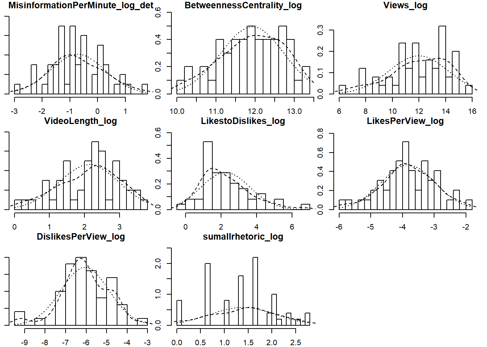
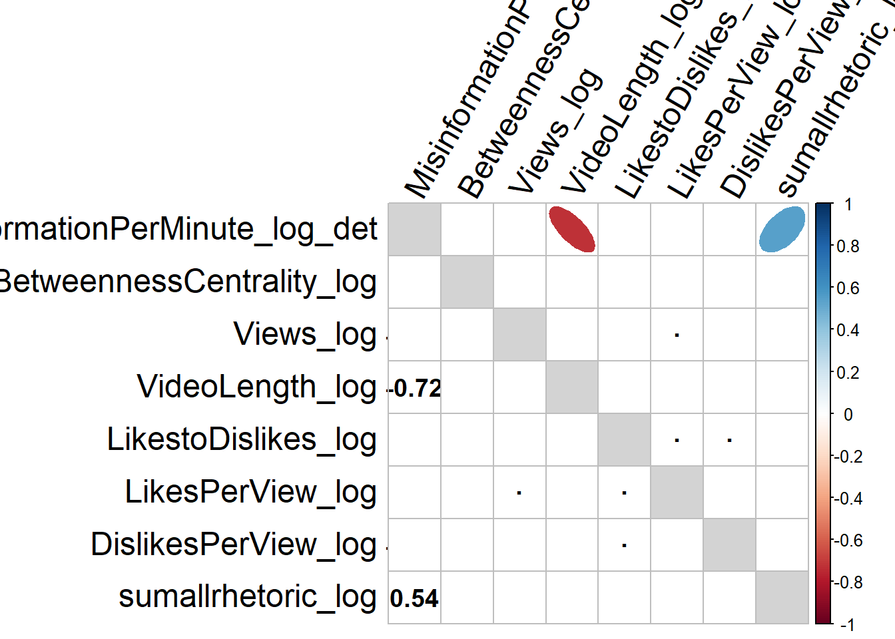
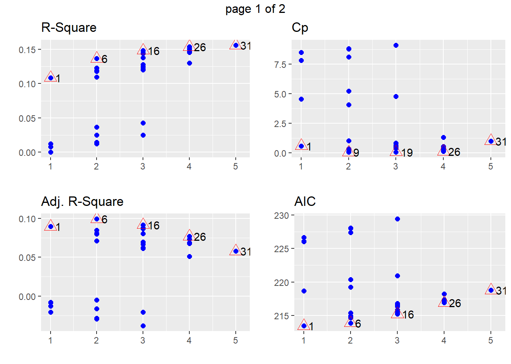
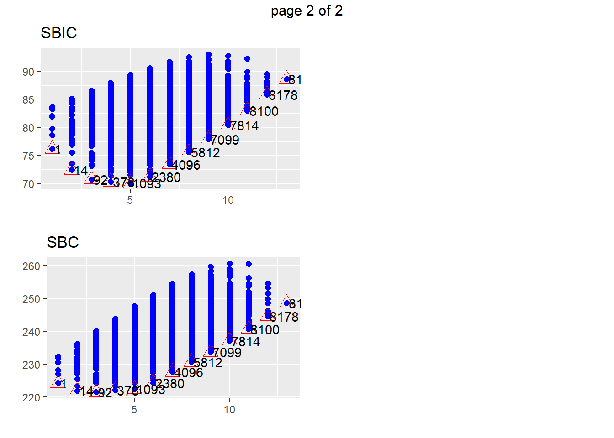
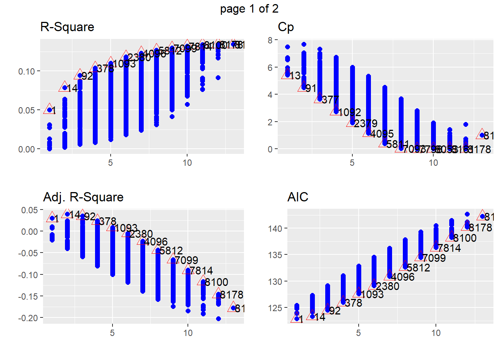
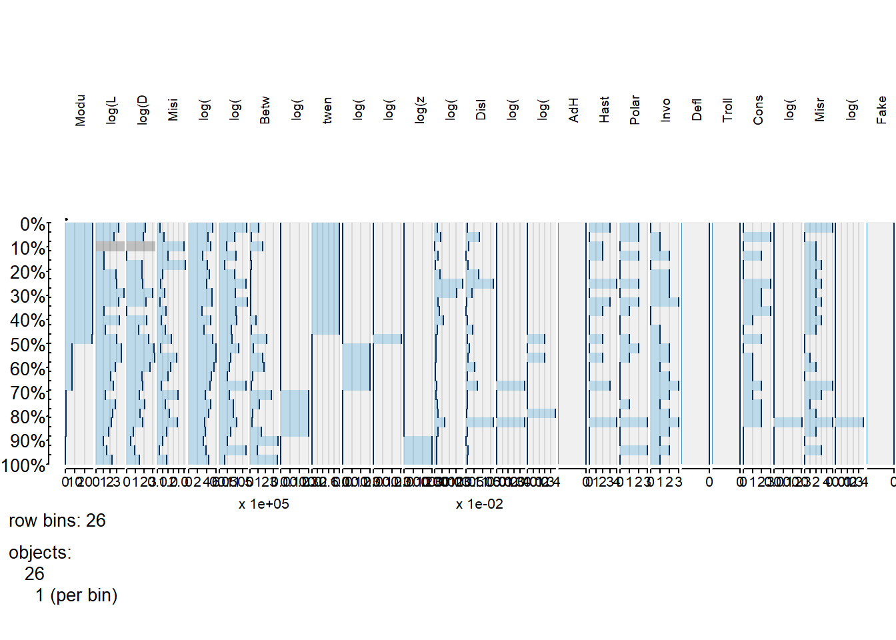
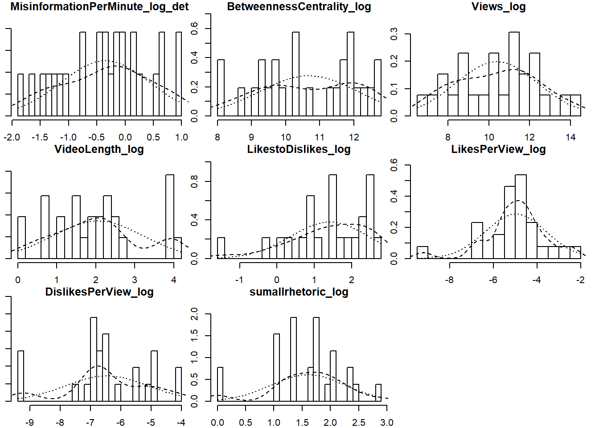
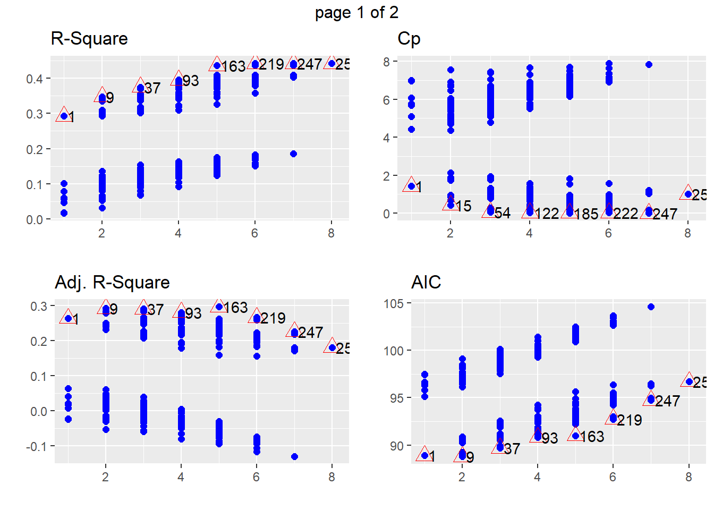
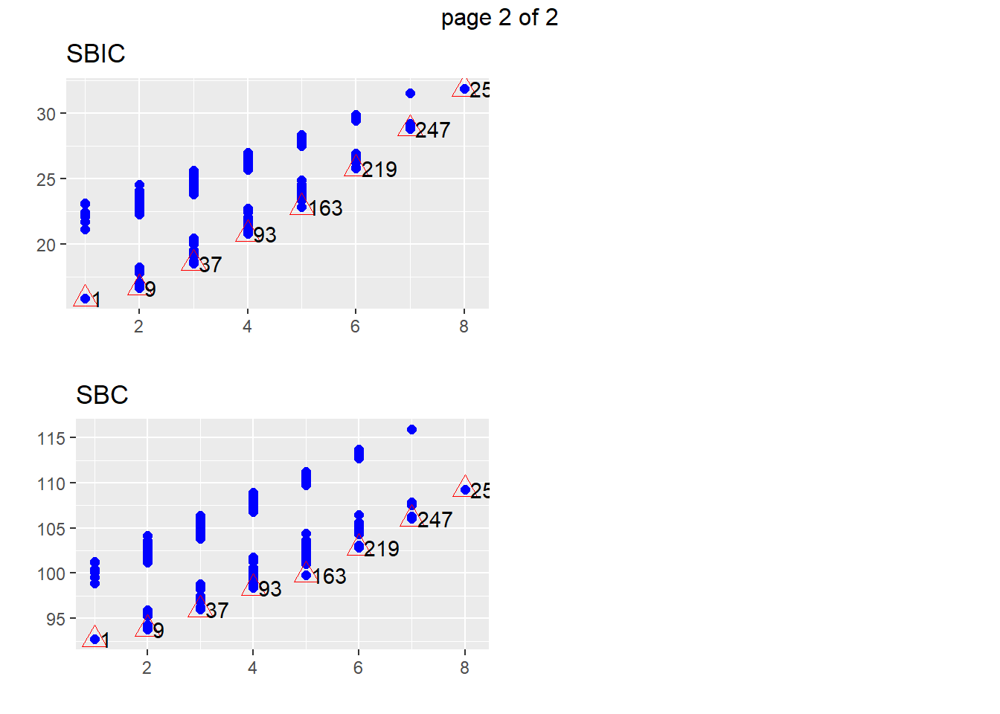

youtube
StephanLewandowsky
2019-12-31
Last updated: 2020-01-01
Checks: 6 1
Knit directory: MuhsinPhase1/
This reproducible R Markdown analysis was created with workflowr (version 1.4.0). The Checks tab describes the reproducibility checks that were applied when the results were created. The Past versions tab lists the development history.
Great! Since the R Markdown file has been committed to the Git repository, you know the exact version of the code that produced these results.
The global environment had objects present when the code in the R Markdown file was run. These objects can affect the analysis in your R Markdown file in unknown ways. For reproduciblity it’s best to always run the code in an empty environment. Use wflow_publish or wflow_build to ensure that the code is always run in an empty environment.
The following objects were defined in the global environment when these results were created:
| Name | Class | Size |
|---|---|---|
| data | environment | 56 bytes |
| env | environment | 56 bytes |
The command set.seed(20191231) was run prior to running the code in the R Markdown file. Setting a seed ensures that any results that rely on randomness, e.g. subsampling or permutations, are reproducible.
Great job! Recording the operating system, R version, and package versions is critical for reproducibility.
Nice! There were no cached chunks for this analysis, so you can be confident that you successfully produced the results during this run.
Great job! Using relative paths to the files within your workflowr project makes it easier to run your code on other machines.
Great! You are using Git for version control. Tracking code development and connecting the code version to the results is critical for reproducibility. The version displayed above was the version of the Git repository at the time these results were generated.
Note that you need to be careful to ensure that all relevant files for the analysis have been committed to Git prior to generating the results (you can use wflow_publish or wflow_git_commit). workflowr only checks the R Markdown file, but you know if there are other scripts or data files that it depends on. Below is the status of the Git repository when the results were generated:
Ignored files:
Ignored: .Rhistory
Ignored: .Rproj.user/
Untracked files:
Untracked: analysis/youtubefuncs.R
Untracked: data/IslamophobiaSPSSDATA.sav
Untracked: data/RadicalisationSPSS.sav
Note that any generated files, e.g. HTML, png, CSS, etc., are not included in this status report because it is ok for generated content to have uncommitted changes.
These are the previous versions of the R Markdown and HTML files. If you’ve configured a remote Git repository (see ?wflow_git_remote), click on the hyperlinks in the table below to view them.
| File | Version | Author | Date | Message |
|---|---|---|---|---|
| Rmd | 1b5cc0e | StephanLewandowsky | 2020-01-01 | wflow_publish(c(“analysis/index.Rmd”, “analysis/youtube.Rmd”)) |
| html | 69d82ce | StephanLewandowsky | 2020-01-01 | Build site. |
| Rmd | 6b02997 | StephanLewandowsky | 2020-01-01 | wflow_publish(c(“analysis/index.Rmd”, “analysis/youtube.Rmd”)) |
| html | a33aac0 | StephanLewandowsky | 2020-01-01 | Build site. |
| Rmd | 918ca74 | StephanLewandowsky | 2020-01-01 | wflow_publish(c(“analysis/index.Rmd”, “analysis/youtube.Rmd”)) |
| html | 02ca5fb | StephanLewandowsky | 2020-01-01 | Build site. |
| Rmd | 7007bab | StephanLewandowsky | 2020-01-01 | wflow_publish(c(“analysis/index.Rmd”, “analysis/youtube.Rmd”)) |
| html | de51058 | StephanLewandowsky | 2020-01-01 | Build site. |
| Rmd | ef60d80 | StephanLewandowsky | 2020-01-01 | wflow_publish(c(“analysis/index.Rmd”, “analysis/youtube.Rmd”)) |
| html | 73cc888 | StephanLewandowsky | 2020-01-01 | Build site. |
| Rmd | 0137833 | StephanLewandowsky | 2020-01-01 | wflow_publish(c(“analysis/index.Rmd”, “analysis/youtube.Rmd”)) |
| html | ae6e0f8 | StephanLewandowsky | 2019-12-31 | Build site. |
| Rmd | 286072b | StephanLewandowsky | 2019-12-31 | wflow_publish(c(“analysis/index.Rmd”, “analysis/youtube.Rmd”)) |
| html | 2abe1cc | StephanLewandowsky | 2019-12-31 | Build site. |
| Rmd | 38a326c | StephanLewandowsky | 2019-12-31 | wflow_publish(c(“analysis/index.Rmd”, “analysis/youtube.Rmd”)) |
| html | 138148f | StephanLewandowsky | 2019-12-31 | Build site. |
| Rmd | a7ef883 | StephanLewandowsky | 2019-12-31 | wflow_publish(c(“analysis/index.Rmd”, “analysis/youtube.Rmd”)) |
0.1 Introduction
rm(list=ls())
library(lattice)
library(ggplot2)
library(tabplot)
library(tidyverse)
library(lme4)
library(RColorBrewer)
library(gridExtra)
library(stringr)
library(Hmisc)
library(reshape2)
library(psych)
library(scales)
library(summarytools) #contains descr()
library(foreign) #for SPSS
library(workflowr)
library(olsrr)
library(corrplot)
library(vioplot)
#define working directories and get functions ready
inputdir <- "data"
source ("analysis/youtubefuncs.R")
iphob <- read.spss(paste(inputdir,"IslamophobiaSPSSDATA.sav",sep="/"), use.value.labels = TRUE, to.data.frame = TRUE)
irad <- read.spss(paste(inputdir,"RadicalisationSPSS.sav",sep="/"), use.value.labels = TRUE, to.data.frame = TRUE)
irad <- irad[!rowSums(is.na(irad))==dim(irad)[2], ]0.2 Summary statistics for Islamophobia
withModularity <- 1 #determine whether or not modularity should enter as a factor into the regressions
descr(iphob)Descriptive Statistics
iphob
N: 50
AdConsequentiam AdHomien AdPopulum BetweennessCentrality
----------------- ----------------- ---------- ----------- -----------------------
Mean 0.30 0.16 0.02 200977.03
Std.Dev 0.61 0.51 0.14 148338.18
Min 0.00 0.00 0.00 26606.43
Q1 0.00 0.00 0.00 84755.97
Median 0.00 0.00 0.00 155983.60
Q3 0.00 0.00 0.00 281046.30
Max 3.00 3.00 1.00 651599.12
MAD 0.00 0.00 0.00 135844.29
IQR 0.00 0.00 0.00 192365.31
CV 2.05 3.18 7.07 0.74
Skewness 2.33 3.88 6.65 1.12
SE.Skewness 0.34 0.34 0.34 0.34
Kurtosis 6.01 17.05 43.12 0.89
N.Valid 50.00 50.00 50.00 50.00
Pct.Valid 100.00 100.00 100.00 100.00
Table: Table continues below
CherryPickedData Conspiracy DeflectingBlame Dislikes DislikesPerView
----------------- ------------------ ------------ ----------------- ---------- -----------------
Mean 0.42 0.22 0.04 1796.30 0.00
Std.Dev 0.78 0.55 0.20 2499.40 0.01
Min 0.00 0.00 0.00 0.00 0.00
Q1 0.00 0.00 0.00 69.00 0.00
Median 0.00 0.00 0.00 431.50 0.00
Q3 1.00 0.00 0.00 3000.00 0.00
Max 3.00 3.00 1.00 10000.00 0.04
MAD 0.00 0.00 0.00 621.95 0.00
IQR 1.00 0.00 0.00 2906.00 0.00
CV 1.87 2.48 4.95 1.39 1.39
Skewness 1.87 3.06 4.55 1.60 3.52
SE.Skewness 0.34 0.34 0.34 0.34 0.34
Kurtosis 2.77 11.18 19.13 1.96 15.81
N.Valid 50.00 50.00 50.00 50.00 50.00
Pct.Valid 100.00 100.00 100.00 100.00 100.00
Table: Table continues below
FakeAccounts FalseCause five HastyGeneralisations InvokingEmotion
----------------- -------------- ------------ -------- ---------------------- -----------------
Mean 0.00 0.38 0.12 1.42 1.00
Std.Dev 0.00 0.73 0.33 1.26 0.99
Min 0.00 0.00 0.00 0.00 0.00
Q1 0.00 0.00 0.00 0.00 0.00
Median 0.00 0.00 0.00 1.00 1.00
Q3 0.00 1.00 0.00 2.00 2.00
Max 0.00 3.00 1.00 4.00 3.00
MAD 0.00 0.00 0.00 1.48 1.48
IQR 0.00 0.75 0.00 2.00 2.00
CV NaN 1.91 2.74 0.89 0.99
Skewness NaN 1.83 2.27 0.44 0.62
SE.Skewness 0.34 0.34 0.34 0.34 0.34
Kurtosis NaN 2.54 3.21 -1.02 -0.75
N.Valid 50.00 50.00 50.00 50.00 50.00
Pct.Valid 100.00 100.00 100.00 100.00 100.00
Table: Table continues below
Likes LikesPerView LikestoDislikes MisinformationPerMinute
----------------- ---------- -------------- ----------------- -------------------------
Mean 13012.16 0.03 33.62 0.79
Std.Dev 19533.34 0.03 104.18 1.00
Min 0.00 0.00 0.00 0.05
Q1 1400.00 0.01 3.45 0.26
Median 3700.00 0.02 6.27 0.44
Q3 16000.00 0.04 19.82 1.00
Max 90000.00 0.15 712.50 5.84
MAD 5029.72 0.02 6.73 0.34
IQR 14575.00 0.02 16.08 0.73
CV 1.50 0.94 3.10 1.26
Skewness 2.14 2.10 5.61 3.05
SE.Skewness 0.34 0.34 0.34 0.34
Kurtosis 4.66 5.09 33.20 11.22
N.Valid 50.00 50.00 50.00 50.00
Pct.Valid 100.00 100.00 100.00 100.00
Table: Table continues below
MisrepresentationScripture Modularity one Polarisation seven
----------------- ---------------------------- ------------ -------- -------------- --------
Mean 0.42 6.84 0.02 0.48 0.02
Std.Dev 0.84 2.38 0.14 0.79 0.14
Min 0.00 0.00 0.00 0.00 0.00
Q1 0.00 6.00 0.00 0.00 0.00
Median 0.00 6.00 0.00 0.00 0.00
Q3 1.00 10.00 0.00 1.00 0.00
Max 4.00 10.00 1.00 3.00 1.00
MAD 0.00 0.74 0.00 0.00 0.00
IQR 1.00 4.00 0.00 1.00 0.00
CV 1.99 0.35 7.07 1.64 7.07
Skewness 2.41 -0.18 6.65 1.65 6.65
SE.Skewness 0.34 0.34 0.34 0.34 0.34
Kurtosis 6.18 0.13 43.12 2.13 43.12
N.Valid 50.00 50.00 50.00 50.00 50.00
Pct.Valid 100.00 100.00 100.00 100.00 100.00
Table: Table continues below
six ten Trolling VideoLength Views zero
----------------- -------- -------- ---------- ------------- ------------ --------
Mean 0.50 0.30 0.12 11.50 678605.22 0.02
Std.Dev 0.51 0.46 0.48 8.88 1028999.01 0.14
Min 0.00 0.00 0.00 1.17 411.00 0.00
Q1 0.00 0.00 0.00 4.35 46711.00 0.00
Median 0.50 0.00 0.00 9.55 182626.00 0.00
Q3 1.00 1.00 0.00 16.46 1025916.00 0.00
Max 1.00 1.00 3.00 37.08 5415557.00 1.00
MAD 0.74 0.00 0.00 7.75 265312.75 0.00
IQR 1.00 1.00 0.00 11.53 960053.00 0.00
CV 1.01 1.54 4.00 0.77 1.52 7.07
Skewness 0.00 0.85 4.68 1.11 2.45 6.65
SE.Skewness 0.34 0.34 0.34 0.34 0.34 0.34
Kurtosis -2.04 -1.31 23.65 0.53 7.25 43.12
N.Valid 50.00 50.00 50.00 50.00 50.00 50.00
Pct.Valid 100.00 100.00 100.00 100.00 100.00 100.00tableplot(iphob)
| Version | Author | Date |
|---|---|---|
| 73cc888 | StephanLewandowsky | 2020-01-01 |
temp1 <- iphob %>% select(c(Modularity,MisinformationPerMinute,BetweennessCentrality,
Views,VideoLength,LikestoDislikes,LikesPerView,DislikesPerView,
AdConsequentiam, AdHomien, AdPopulum, FalseCause, HastyGeneralisations,
Polarisation, InvokingEmotion, Conspiracy, Trolling, DeflectingBlame,
MisrepresentationScripture, CherryPickedData))
#zero likes is a clear outlier after log transform, so remove it
temp1$LikesPerView[temp1$LikesPerView==0]<-NA
temp1$LikestoDislikes[temp1$LikestoDislikes==0]<-NA
temp1$sumallrhetoric <- temp1 %>% select(AdConsequentiam:CherryPickedData) %>% apply(.,1,sum)
temp1 <- data.frame(temp1,temp1 %>% select(c(MisinformationPerMinute, BetweennessCentrality, Views,
VideoLength, LikestoDislikes ,LikesPerView, DislikesPerView, sumallrhetoric)) %>%
mutate_all(~ log(. + .0001)) %>% rename_all( ~paste0(., "_log") ))
temp1 <- rename(temp1,MisinformationPerMinute_log_det = MisinformationPerMinute_log)
#now look at detailed endogenous variables
temp2 <- iphob %>% select(AdConsequentiam:MisrepresentationScripture) %>% rename_all( ~paste0(., "_det") )
iphomainvars <- data.frame(temp1, temp2)
multi.hist(iphomainvars%>%select(contains("log")))
| Version | Author | Date |
|---|---|---|
| 73cc888 | StephanLewandowsky | 2020-01-01 |
#corrplot...
RM <- cor(iphomainvars%>%select(contains("log")))
RM2 <- cor.mtest(iphomainvars%>%select(contains("log")), conf.level = .95)
diag(RM)<-NA
x11(width=11,height=10)
#colnames(RM) <- rownames(RM) <- c("Conservatism","Truth Knowable","Intuitive","Conspiracism","Need for Chaos","Knowledge Source",
#"Consensus AIDS","Consensus Vaccinations","Consensus Climate")
corrplot.mixed(RM, lower.col = "black", number.cex = 1.2,insig = "blank",
upper="ellipse",p.mat = RM2$p,sig.level=.05,
tl.pos="lt",tl.col="black",na.label = ".",bg="lightgray",
tl.cex=1.5,tl.srt=60)
| Version | Author | Date |
|---|---|---|
| 73cc888 | StephanLewandowsky | 2020-01-01 |
#dev.print(pdf,paste(figdir,"cormat.pdf",sep="/"))
RM <- cor(iphomainvars%>%select(contains("det")))
RM2 <- cor.mtest(iphomainvars%>%select(contains("det")), conf.level = .95)
diag(RM)<-NA
x11(width=11,height=10)
#colnames(RM) <- rownames(RM) <- c("Conservatism","Truth Knowable","Intuitive","Conspiracism","Need for Chaos","Knowledge Source",
#"Consensus AIDS","Consensus Vaccinations","Consensus Climate")
corrplot.mixed(RM, lower.col = "black", number.cex = 1.2,insig = "blank",
upper="ellipse",p.mat = RM2$p,sig.level=.05,
tl.pos="lt",tl.col="black",na.label = ".",bg="lightgray",
tl.cex=1.5,tl.srt=60)
| Version | Author | Date |
|---|---|---|
| 69d82ce | StephanLewandowsky | 2020-01-01 |
0.3 Predict various outcomes for Islamophobia
0.3.1 Predict views for Islamophobia, first from exogenous then endogenous parameters
dv <- "Views_log"
exovars1 <- paste(names(iphomainvars %>% select(c(BetweennessCentrality_log:DislikesPerView_log)) %>% select(-dv)),collapse=" + ")
do1reg(dv, exovars1, iphomainvars, withModularity) #last argument indicates whether modularity should be in thereViews_log ~ factor(Modularity) + BetweennessCentrality_log +
VideoLength_log + LikestoDislikes_log + LikesPerView_log +
DislikesPerView_log
| Version | Author | Date |
|---|---|---|
| 73cc888 | StephanLewandowsky | 2020-01-01 |

| Version | Author | Date |
|---|---|---|
| 73cc888 | StephanLewandowsky | 2020-01-01 |
# A tibble: 6 x 6
Index N Predictors `R-Square` `Adj. R-Square` `Mallow's Cp`
<int> <int> <chr> <dbl> <dbl> <dbl>
1 1 1 factor(Modularity) 0.289 0.190 6.60
2 7 2 factor(Modularity) ~ 0.343 0.231 1.63
3 22 3 factor(Modularity) ~ 0.397 0.276 -0.0410
4 42 4 factor(Modularity) ~ 0.421 0.288 0.304
5 57 5 factor(Modularity) ~ 0.442 0.295 0.935
6 63 6 factor(Modularity) ~ 0.455 0.293 2
Call:
lm(formula = bmFormula, data = d4regglobal)
Residuals:
Min 1Q Median 3Q Max
-5.022 -1.086 0.000 1.117 3.583
Coefficients:
Estimate Std. Error t value Pr(>|t|)
(Intercept) 13.9887 1.9994 6.996 1.3e-08 ***
factor(Modularity)1 0.6382 2.8276 0.226 0.8225
factor(Modularity)4 -5.3804 2.8276 -1.903 0.0638 .
factor(Modularity)5 -0.4732 2.1596 -0.219 0.8276
factor(Modularity)6 -2.9480 2.0390 -1.446 0.1555
factor(Modularity)7 -2.5932 2.8276 -0.917 0.3642
factor(Modularity)10 -1.1574 2.0650 -0.560 0.5780
---
Signif. codes: 0 '***' 0.001 '**' 0.01 '*' 0.05 '.' 0.1 ' ' 1
Residual standard error: 1.999 on 43 degrees of freedom
Multiple R-squared: 0.2888, Adjusted R-squared: 0.1896
F-statistic: 2.91 on 6 and 43 DF, p-value: 0.01799
Call:
lm(formula = bmFormula, data = d4regglobal)
Residuals:
Min 1Q Median 3Q Max
-5.7919 -0.8049 0.0000 0.9707 3.2675
Coefficients:
Estimate Std. Error t value Pr(>|t|)
(Intercept) 11.1777 2.3752 4.706 2.87e-05 ***
factor(Modularity)1 0.1394 2.6795 0.052 0.9588
factor(Modularity)4 -5.0801 2.6717 -1.901 0.0643 .
factor(Modularity)5 -0.1012 2.0461 -0.049 0.9608
factor(Modularity)6 -2.3881 1.9367 -1.233 0.2246
factor(Modularity)7 -2.5393 2.6674 -0.952 0.3467
factor(Modularity)10 -0.9556 1.9507 -0.490 0.6268
LikesPerView_log -0.6536 0.3357 -1.947 0.0584 .
---
Signif. codes: 0 '***' 0.001 '**' 0.01 '*' 0.05 '.' 0.1 ' ' 1
Residual standard error: 1.886 on 41 degrees of freedom
(1 observation deleted due to missingness)
Multiple R-squared: 0.343, Adjusted R-squared: 0.2308
F-statistic: 3.058 on 7 and 41 DF, p-value: 0.01103
Call:
lm(formula = bmFormula, data = d4regglobal)
Residuals:
Min 1Q Median 3Q Max
-5.5496 -0.7519 0.0000 0.9573 3.4387
Coefficients:
Estimate Std. Error t value Pr(>|t|)
(Intercept) 8.8216 2.6202 3.367 0.00169 **
factor(Modularity)1 -0.2443 2.6067 -0.094 0.92579
factor(Modularity)4 -5.4464 2.5980 -2.096 0.04242 *
factor(Modularity)5 -0.3194 1.9876 -0.161 0.87313
factor(Modularity)6 -2.8731 1.8975 -1.514 0.13785
factor(Modularity)7 -2.1854 2.5935 -0.843 0.40443
factor(Modularity)10 -1.0897 1.8942 -0.575 0.56834
LikestoDislikes_log -0.5544 0.3236 -1.713 0.09438 .
DislikesPerView_log -1.0686 0.3944 -2.709 0.00987 **
---
Signif. codes: 0 '***' 0.001 '**' 0.01 '*' 0.05 '.' 0.1 ' ' 1
Residual standard error: 1.829 on 40 degrees of freedom
(1 observation deleted due to missingness)
Multiple R-squared: 0.397, Adjusted R-squared: 0.2765
F-statistic: 3.293 on 8 and 40 DF, p-value: 0.005584
Call:
lm(formula = bmFormula, data = d4regglobal)
Residuals:
Min 1Q Median 3Q Max
-5.5390 -0.7659 0.0000 1.0303 3.3632
Coefficients:
Estimate Std. Error t value Pr(>|t|)
(Intercept) 7.0544 2.9425 2.397 0.0214 *
factor(Modularity)1 -0.3976 2.5888 -0.154 0.8787
factor(Modularity)4 -5.6881 2.5843 -2.201 0.0337 *
factor(Modularity)5 -0.4669 1.9751 -0.236 0.8144
factor(Modularity)6 -3.0078 1.8854 -1.595 0.1187
factor(Modularity)7 -1.9259 2.5808 -0.746 0.4600
factor(Modularity)10 -0.9853 1.8810 -0.524 0.6033
LikestoDislikes_log -6.2811 4.4798 -1.402 0.1688
LikesPerView_log 5.8893 4.5952 1.282 0.2075
DislikesPerView_log -7.2662 4.8515 -1.498 0.1423
---
Signif. codes: 0 '***' 0.001 '**' 0.01 '*' 0.05 '.' 0.1 ' ' 1
Residual standard error: 1.815 on 39 degrees of freedom
(1 observation deleted due to missingness)
Multiple R-squared: 0.4214, Adjusted R-squared: 0.2879
F-statistic: 3.156 on 9 and 39 DF, p-value: 0.005919endovars4all <- paste(names(iphomainvars %>% select(contains("det"))),collapse=" + ")
do1reg(dv, endovars4all, iphomainvars, withModularity) Views_log ~ factor(Modularity) + MisinformationPerMinute_log_det +
AdConsequentiam_det + AdHomien_det + AdPopulum_det + FalseCause_det +
HastyGeneralisations_det + Polarisation_det + InvokingEmotion_det +
Conspiracy_det + Trolling_det + DeflectingBlame_det + MisrepresentationScripture_det
| Version | Author | Date |
|---|---|---|
| 69d82ce | StephanLewandowsky | 2020-01-01 |

| Version | Author | Date |
|---|---|---|
| 69d82ce | StephanLewandowsky | 2020-01-01 |
# A tibble: 13 x 6
Index N Predictors `R-Square` `Adj. R-Square` `Mallow's Cp`
<int> <int> <chr> <dbl> <dbl> <dbl>
1 1 1 factor(Modularity) 0.289 0.190 13.6
2 14 2 factor(Modularity)~ 0.384 0.281 7.64
3 92 3 factor(Modularity)~ 0.452 0.345 3.91
4 378 4 factor(Modularity)~ 0.477 0.360 3.82
5 1093 5 factor(Modularity)~ 0.518 0.394 2.40
6 2380 6 factor(Modularity)~ 0.562 0.435 0.759
7 4096 7 factor(Modularity)~ 0.579 0.442 1.33
8 5812 8 factor(Modularity)~ 0.596 0.450 1.85
9 7099 9 factor(Modularity)~ 0.614 0.459 2.40
10 7814 10 factor(Modularity)~ 0.622 0.456 3.65
11 8100 11 factor(Modularity)~ 0.629 0.449 5.10
12 8178 12 factor(Modularity)~ 0.630 0.433 7.03
13 8191 13 factor(Modularity)~ 0.630 0.415 9.
Call:
lm(formula = bmFormula, data = d4regglobal)
Residuals:
Min 1Q Median 3Q Max
-5.022 -1.086 0.000 1.117 3.583
Coefficients:
Estimate Std. Error t value Pr(>|t|)
(Intercept) 13.9887 1.9994 6.996 1.3e-08 ***
factor(Modularity)1 0.6382 2.8276 0.226 0.8225
factor(Modularity)4 -5.3804 2.8276 -1.903 0.0638 .
factor(Modularity)5 -0.4732 2.1596 -0.219 0.8276
factor(Modularity)6 -2.9480 2.0390 -1.446 0.1555
factor(Modularity)7 -2.5932 2.8276 -0.917 0.3642
factor(Modularity)10 -1.1574 2.0650 -0.560 0.5780
---
Signif. codes: 0 '***' 0.001 '**' 0.01 '*' 0.05 '.' 0.1 ' ' 1
Residual standard error: 1.999 on 43 degrees of freedom
Multiple R-squared: 0.2888, Adjusted R-squared: 0.1896
F-statistic: 2.91 on 6 and 43 DF, p-value: 0.01799
Call:
lm(formula = bmFormula, data = d4regglobal)
Residuals:
Min 1Q Median 3Q Max
-5.5065 -1.0625 0.1495 0.9904 3.3780
Coefficients:
Estimate Std. Error t value Pr(>|t|)
(Intercept) 13.9887 1.8828 7.430 3.55e-09 ***
factor(Modularity)1 0.6382 2.6626 0.240 0.8117
factor(Modularity)4 -3.1787 2.7993 -1.136 0.2626
factor(Modularity)5 0.4442 2.0652 0.215 0.8307
factor(Modularity)6 -2.4636 1.9294 -1.277 0.2087
factor(Modularity)7 -1.4923 2.6974 -0.553 0.5830
factor(Modularity)10 -1.1574 1.9445 -0.595 0.5549
FalseCause_det -1.1009 0.4320 -2.548 0.0146 *
---
Signif. codes: 0 '***' 0.001 '**' 0.01 '*' 0.05 '.' 0.1 ' ' 1
Residual standard error: 1.883 on 42 degrees of freedom
Multiple R-squared: 0.3841, Adjusted R-squared: 0.2814
F-statistic: 3.741 on 7 and 42 DF, p-value: 0.003102
Call:
lm(formula = bmFormula, data = d4regglobal)
Residuals:
Min 1Q Median 3Q Max
-5.7157 -1.1198 0.0515 0.9904 3.3619
Coefficients:
Estimate Std. Error t value Pr(>|t|)
(Intercept) 13.9887 1.7969 7.785 1.31e-09 ***
factor(Modularity)1 0.6382 2.5412 0.251 0.80297
factor(Modularity)4 -2.9856 2.6730 -1.117 0.27052
factor(Modularity)5 0.5246 1.9714 0.266 0.79148
factor(Modularity)6 -2.2544 1.8438 -1.223 0.22842
factor(Modularity)7 -1.3958 2.5748 -0.542 0.59070
factor(Modularity)10 -1.1574 1.8558 -0.624 0.53630
AdPopulum_det -4.1675 1.8438 -2.260 0.02918 *
FalseCause_det -1.1974 0.4145 -2.889 0.00615 **
---
Signif. codes: 0 '***' 0.001 '**' 0.01 '*' 0.05 '.' 0.1 ' ' 1
Residual standard error: 1.797 on 41 degrees of freedom
Multiple R-squared: 0.4523, Adjusted R-squared: 0.3454
F-statistic: 4.232 on 8 and 41 DF, p-value: 0.0009095
Call:
lm(formula = bmFormula, data = d4regglobal)
Residuals:
Min 1Q Median 3Q Max
-5.5696 -1.1150 0.0022 0.9241 3.5276
Coefficients:
Estimate Std. Error t value Pr(>|t|)
(Intercept) 13.9887 1.7773 7.871 1.18e-09 ***
factor(Modularity)1 1.1307 2.5386 0.445 0.6584
factor(Modularity)4 -3.0861 2.6448 -1.167 0.2502
factor(Modularity)5 0.5649 1.9501 0.290 0.7736
factor(Modularity)6 -1.9080 1.8408 -1.037 0.3062
factor(Modularity)7 -0.9535 2.5667 -0.371 0.7122
factor(Modularity)10 -1.0918 1.8362 -0.595 0.5555
AdPopulum_det -4.0213 1.8267 -2.201 0.0335 *
FalseCause_det -1.1472 0.4116 -2.787 0.0081 **
Polarisation_det -0.4925 0.3564 -1.382 0.1746
---
Signif. codes: 0 '***' 0.001 '**' 0.01 '*' 0.05 '.' 0.1 ' ' 1
Residual standard error: 1.777 on 40 degrees of freedom
Multiple R-squared: 0.4773, Adjusted R-squared: 0.3596
F-statistic: 4.058 on 9 and 40 DF, p-value: 0.00093670.3.2 Predict centrality for Islamophobia, first from exogenous then endogenous parameters
dv2 <- "BetweennessCentrality_log"
exovars2 <- paste(names(iphomainvars %>% select(c(BetweennessCentrality_log:DislikesPerView_log)) %>% select(-dv2)),collapse=" + ")
do1reg(dv2, exovars2, iphomainvars, withModularity) BetweennessCentrality_log ~ factor(Modularity) + Views_log +
VideoLength_log + LikestoDislikes_log + LikesPerView_log +
DislikesPerView_log
| Version | Author | Date |
|---|---|---|
| 73cc888 | StephanLewandowsky | 2020-01-01 |

| Version | Author | Date |
|---|---|---|
| 73cc888 | StephanLewandowsky | 2020-01-01 |
# A tibble: 6 x 6
Index N Predictors `R-Square` `Adj. R-Square` `Mallow's Cp`
<int> <int> <chr> <dbl> <dbl> <dbl>
1 1 1 factor(Modularity) 0.178 0.0638 -7.33
2 7 2 factor(Modularity) ~ 0.188 0.0494 -4.94
3 22 3 factor(Modularity) ~ 0.201 0.0416 -3.56
4 42 4 factor(Modularity) ~ 0.204 0.0208 -1.70
5 57 5 factor(Modularity) ~ 0.209 0.000679 0.0863
6 63 6 factor(Modularity) ~ 0.211 -0.0239 2
Call:
lm(formula = bmFormula, data = d4regglobal)
Residuals:
Min 1Q Median 3Q Max
-1.4255 -0.3740 0.0000 0.6111 1.2014
Coefficients:
Estimate Std. Error t value Pr(>|t|)
(Intercept) 12.9033 0.7809 16.524 <2e-16 ***
factor(Modularity)1 -0.7759 1.1043 -0.703 0.486
factor(Modularity)4 -0.8963 1.1043 -0.812 0.421
factor(Modularity)5 -0.8843 0.8434 -1.048 0.300
factor(Modularity)6 -1.2889 0.7963 -1.619 0.113
factor(Modularity)7 -0.6674 1.1043 -0.604 0.549
factor(Modularity)10 -0.6015 0.8065 -0.746 0.460
---
Signif. codes: 0 '***' 0.001 '**' 0.01 '*' 0.05 '.' 0.1 ' ' 1
Residual standard error: 0.7809 on 43 degrees of freedom
Multiple R-squared: 0.1784, Adjusted R-squared: 0.06381
F-statistic: 1.557 on 6 and 43 DF, p-value: 0.1832
Call:
lm(formula = bmFormula, data = d4regglobal)
Residuals:
Min 1Q Median 3Q Max
-1.4603 -0.3788 0.0000 0.6351 1.2409
Coefficients:
Estimate Std. Error t value Pr(>|t|)
(Intercept) 12.4118 0.9991 12.423 1.75e-15 ***
factor(Modularity)1 -0.8631 1.1271 -0.766 0.448
factor(Modularity)4 -0.8438 1.1238 -0.751 0.457
factor(Modularity)5 -0.8193 0.8607 -0.952 0.347
factor(Modularity)6 -1.2142 0.8147 -1.490 0.144
factor(Modularity)7 -0.6580 1.1220 -0.586 0.561
factor(Modularity)10 -0.5662 0.8205 -0.690 0.494
LikesPerView_log -0.1143 0.1412 -0.809 0.423
---
Signif. codes: 0 '***' 0.001 '**' 0.01 '*' 0.05 '.' 0.1 ' ' 1
Residual standard error: 0.7933 on 41 degrees of freedom
(1 observation deleted due to missingness)
Multiple R-squared: 0.1881, Adjusted R-squared: 0.04944
F-statistic: 1.357 on 7 and 41 DF, p-value: 0.2495
Call:
lm(formula = bmFormula, data = d4regglobal)
Residuals:
Min 1Q Median 3Q Max
-1.3763 -0.4276 0.0000 0.6113 1.3453
Coefficients:
Estimate Std. Error t value Pr(>|t|)
(Intercept) 13.01204 1.24506 10.451 5.33e-13 ***
factor(Modularity)1 -0.85562 1.13183 -0.756 0.454
factor(Modularity)4 -1.11659 1.17719 -0.949 0.349
factor(Modularity)5 -0.82473 0.86426 -0.954 0.346
factor(Modularity)6 -1.34247 0.83306 -1.611 0.115
factor(Modularity)7 -0.79435 1.13905 -0.697 0.490
factor(Modularity)10 -0.61756 0.82633 -0.747 0.459
Views_log -0.05370 0.06596 -0.814 0.420
LikesPerView_log -0.14938 0.14820 -1.008 0.320
---
Signif. codes: 0 '***' 0.001 '**' 0.01 '*' 0.05 '.' 0.1 ' ' 1
Residual standard error: 0.7966 on 40 degrees of freedom
(1 observation deleted due to missingness)
Multiple R-squared: 0.2013, Adjusted R-squared: 0.04156
F-statistic: 1.26 on 8 and 40 DF, p-value: 0.2912
Call:
lm(formula = bmFormula, data = d4regglobal)
Residuals:
Min 1Q Median 3Q Max
-1.3876 -0.4508 0.0000 0.6894 1.3141
Coefficients:
Estimate Std. Error t value Pr(>|t|)
(Intercept) 12.87552 1.30665 9.854 3.88e-12 ***
factor(Modularity)1 -0.88733 1.14760 -0.773 0.444
factor(Modularity)4 -1.18156 1.20485 -0.981 0.333
factor(Modularity)5 -0.84205 0.87521 -0.962 0.342
factor(Modularity)6 -1.39448 0.85889 -1.624 0.113
factor(Modularity)7 -0.78174 1.15174 -0.679 0.501
factor(Modularity)10 -0.63095 0.83729 -0.754 0.456
Views_log -0.06072 0.06960 -0.872 0.388
LikestoDislikes_log -0.14693 0.14757 -0.996 0.326
DislikesPerView_log -0.19253 0.18887 -1.019 0.314
---
Signif. codes: 0 '***' 0.001 '**' 0.01 '*' 0.05 '.' 0.1 ' ' 1
Residual standard error: 0.8052 on 39 degrees of freedom
(1 observation deleted due to missingness)
Multiple R-squared: 0.2044, Adjusted R-squared: 0.02075
F-statistic: 1.113 on 9 and 39 DF, p-value: 0.3767do1reg(dv2, endovars4all, iphomainvars, withModularity) BetweennessCentrality_log ~ factor(Modularity) + MisinformationPerMinute_log_det +
AdConsequentiam_det + AdHomien_det + AdPopulum_det + FalseCause_det +
HastyGeneralisations_det + Polarisation_det + InvokingEmotion_det +
Conspiracy_det + Trolling_det + DeflectingBlame_det + MisrepresentationScripture_det
| Version | Author | Date |
|---|---|---|
| 69d82ce | StephanLewandowsky | 2020-01-01 |

| Version | Author | Date |
|---|---|---|
| 69d82ce | StephanLewandowsky | 2020-01-01 |
# A tibble: 13 x 6
Index N Predictors `R-Square` `Adj. R-Square` `Mallow's Cp`
<int> <int> <chr> <dbl> <dbl> <dbl>
1 1 1 factor(Modularity) 0.178 0.0638 9.50
2 14 2 factor(Modularity)~ 0.317 0.203 2.15
3 92 3 factor(Modularity)~ 0.401 0.284 -1.54
4 378 4 factor(Modularity)~ 0.443 0.317 -2.34
5 1093 5 factor(Modularity)~ 0.467 0.330 -1.98
6 2380 6 factor(Modularity)~ 0.483 0.333 -1.08
7 4096 7 factor(Modularity)~ 0.498 0.335 -0.103
8 5812 8 factor(Modularity)~ 0.509 0.332 1.14
9 7099 9 factor(Modularity)~ 0.518 0.325 2.57
10 7814 10 factor(Modularity)~ 0.527 0.318 3.95
11 8100 11 factor(Modularity)~ 0.535 0.310 5.40
12 8178 12 factor(Modularity)~ 0.541 0.297 7.00
13 8191 13 factor(Modularity)~ 0.541 0.275 9
Call:
lm(formula = bmFormula, data = d4regglobal)
Residuals:
Min 1Q Median 3Q Max
-1.4255 -0.3740 0.0000 0.6111 1.2014
Coefficients:
Estimate Std. Error t value Pr(>|t|)
(Intercept) 12.9033 0.7809 16.524 <2e-16 ***
factor(Modularity)1 -0.7759 1.1043 -0.703 0.486
factor(Modularity)4 -0.8963 1.1043 -0.812 0.421
factor(Modularity)5 -0.8843 0.8434 -1.048 0.300
factor(Modularity)6 -1.2889 0.7963 -1.619 0.113
factor(Modularity)7 -0.6674 1.1043 -0.604 0.549
factor(Modularity)10 -0.6015 0.8065 -0.746 0.460
---
Signif. codes: 0 '***' 0.001 '**' 0.01 '*' 0.05 '.' 0.1 ' ' 1
Residual standard error: 0.7809 on 43 degrees of freedom
Multiple R-squared: 0.1784, Adjusted R-squared: 0.06381
F-statistic: 1.557 on 6 and 43 DF, p-value: 0.1832
Call:
lm(formula = bmFormula, data = d4regglobal)
Residuals:
Min 1Q Median 3Q Max
-1.2570 -0.3400 0.0000 0.5714 1.2888
Coefficients:
Estimate Std. Error t value Pr(>|t|)
(Intercept) 12.9033 0.7205 17.908 < 2e-16 ***
factor(Modularity)1 -0.7759 1.0190 -0.761 0.45065
factor(Modularity)4 -0.8963 1.0190 -0.880 0.38409
factor(Modularity)5 -0.8843 0.7783 -1.136 0.26228
factor(Modularity)6 -1.5226 0.7392 -2.060 0.04564 *
factor(Modularity)7 -0.6674 1.0190 -0.655 0.51607
factor(Modularity)10 -0.6405 0.7443 -0.861 0.39438
Conspiracy_det 0.5842 0.2004 2.916 0.00567 **
---
Signif. codes: 0 '***' 0.001 '**' 0.01 '*' 0.05 '.' 0.1 ' ' 1
Residual standard error: 0.7205 on 42 degrees of freedom
Multiple R-squared: 0.3168, Adjusted R-squared: 0.2029
F-statistic: 2.782 on 7 and 42 DF, p-value: 0.01802
Call:
lm(formula = bmFormula, data = d4regglobal)
Residuals:
Min 1Q Median 3Q Max
-1.30523 -0.28381 -0.00702 0.43203 1.16314
Coefficients:
Estimate Std. Error t value Pr(>|t|)
(Intercept) 12.9033 0.6828 18.897 <2e-16 ***
factor(Modularity)1 -1.1085 0.9756 -1.136 0.2624
factor(Modularity)4 -0.8963 0.9657 -0.928 0.3588
factor(Modularity)5 -0.9398 0.7379 -1.274 0.2100
factor(Modularity)6 -1.7418 0.7064 -2.466 0.0179 *
factor(Modularity)7 -1.0000 0.9756 -1.025 0.3113
factor(Modularity)10 -0.6792 0.7055 -0.963 0.3413
Polarisation_det 0.3326 0.1385 2.401 0.0210 *
Conspiracy_det 0.5002 0.1931 2.591 0.0132 *
---
Signif. codes: 0 '***' 0.001 '**' 0.01 '*' 0.05 '.' 0.1 ' ' 1
Residual standard error: 0.6828 on 41 degrees of freedom
Multiple R-squared: 0.401, Adjusted R-squared: 0.2841
F-statistic: 3.431 on 8 and 41 DF, p-value: 0.004137
Call:
lm(formula = bmFormula, data = d4regglobal)
Residuals:
Min 1Q Median 3Q Max
-1.21913 -0.31704 -0.01906 0.49740 1.16230
Coefficients:
Estimate Std. Error t value Pr(>|t|)
(Intercept) 12.9033 0.6669 19.348 < 2e-16 ***
factor(Modularity)1 -1.0848 0.9529 -1.138 0.26172
factor(Modularity)4 -1.4295 0.9924 -1.440 0.15754
factor(Modularity)5 -1.1580 0.7317 -1.583 0.12139
factor(Modularity)6 -1.8550 0.6931 -2.677 0.01073 *
factor(Modularity)7 -1.2429 0.9631 -1.290 0.20429
factor(Modularity)10 -0.6784 0.6891 -0.985 0.33079
FalseCause_det 0.2666 0.1544 1.726 0.09199 .
Polarisation_det 0.3089 0.1360 2.272 0.02855 *
Conspiracy_det 0.5351 0.1896 2.821 0.00741 **
---
Signif. codes: 0 '***' 0.001 '**' 0.01 '*' 0.05 '.' 0.1 ' ' 1
Residual standard error: 0.6669 on 40 degrees of freedom
Multiple R-squared: 0.4426, Adjusted R-squared: 0.3171
F-statistic: 3.528 on 9 and 40 DF, p-value: 0.0026780.3.3 Predict likes to dislikes for Islamophobia, first from exogenous then endogenous parameters
dv3 <- "LikestoDislikes_log"
#note that all like variables are removed from list of potential predictors
exovars3 <- paste(names(iphomainvars %>% select(c(BetweennessCentrality_log:DislikesPerView_log)) %>% select(-contains("ikes"))),collapse=" + ")
do1reg(dv3, exovars3, iphomainvars, withModularity) LikestoDislikes_log ~ factor(Modularity) + BetweennessCentrality_log +
Views_log + VideoLength_log
| Version | Author | Date |
|---|---|---|
| 73cc888 | StephanLewandowsky | 2020-01-01 |

| Version | Author | Date |
|---|---|---|
| 73cc888 | StephanLewandowsky | 2020-01-01 |
# A tibble: 4 x 6
Index N Predictors `R-Square` `Adj. R-Square` `Mallow's Cp`
<int> <int> <chr> <dbl> <dbl> <dbl>
1 1 1 factor(Modularity) 0.165 0.0453 -5.37
2 5 2 factor(Modularity) ~ 0.173 0.0314 -3.75
3 11 3 factor(Modularity) ~ 0.176 0.0107 -1.89
4 15 4 factor(Modularity) ~ 0.178 -0.0119 0
Call:
lm(formula = bmFormula, data = d4regglobal)
Residuals:
Min 1Q Median 3Q Max
-1.8958 -0.5816 -0.1767 0.3979 4.8160
Coefficients:
Estimate Std. Error t value Pr(>|t|)
(Intercept) 1.1434 1.3385 0.854 0.398
factor(Modularity)1 0.1874 1.8930 0.099 0.922
factor(Modularity)4 1.1339 1.8930 0.599 0.552
factor(Modularity)5 0.9209 1.4458 0.637 0.528
factor(Modularity)6 1.5975 1.3661 1.169 0.249
factor(Modularity)7 -0.6452 1.8930 -0.341 0.735
factor(Modularity)10 0.6094 1.3824 0.441 0.662
Residual standard error: 1.339 on 42 degrees of freedom
(1 observation deleted due to missingness)
Multiple R-squared: 0.1647, Adjusted R-squared: 0.04532
F-statistic: 1.38 on 6 and 42 DF, p-value: 0.2451
Call:
lm(formula = bmFormula, data = d4regglobal)
Residuals:
Min 1Q Median 3Q Max
-1.7037 -0.6672 -0.1325 0.4392 4.8300
Coefficients:
Estimate Std. Error t value Pr(>|t|)
(Intercept) 1.5055 1.4660 1.027 0.310
factor(Modularity)1 0.2860 1.9132 0.149 0.882
factor(Modularity)4 1.2250 1.9122 0.641 0.525
factor(Modularity)5 0.8448 1.4613 0.578 0.566
factor(Modularity)6 1.5526 1.3779 1.127 0.266
factor(Modularity)7 -0.8769 1.9420 -0.452 0.654
factor(Modularity)10 0.5837 1.3931 0.419 0.677
VideoLength_log -0.1504 0.2390 -0.629 0.533
Residual standard error: 1.348 on 41 degrees of freedom
(1 observation deleted due to missingness)
Multiple R-squared: 0.1726, Adjusted R-squared: 0.03138
F-statistic: 1.222 on 7 and 41 DF, p-value: 0.3129
Call:
lm(formula = bmFormula, data = d4regglobal)
Residuals:
Min 1Q Median 3Q Max
-1.6973 -0.6746 -0.1627 0.4310 4.7920
Coefficients:
Estimate Std. Error t value Pr(>|t|)
(Intercept) 2.8127 3.7526 0.750 0.458
factor(Modularity)1 0.2091 1.9441 0.108 0.915
factor(Modularity)4 1.1358 1.9468 0.583 0.563
factor(Modularity)5 0.7545 1.4959 0.504 0.617
factor(Modularity)6 1.4221 1.4344 0.991 0.327
factor(Modularity)7 -0.9475 1.9714 -0.481 0.633
factor(Modularity)10 0.5226 1.4170 0.369 0.714
BetweennessCentrality_log -0.1009 0.2662 -0.379 0.707
VideoLength_log -0.1525 0.2416 -0.631 0.532
Residual standard error: 1.363 on 40 degrees of freedom
(1 observation deleted due to missingness)
Multiple R-squared: 0.1756, Adjusted R-squared: 0.01072
F-statistic: 1.065 on 8 and 40 DF, p-value: 0.4064
Call:
lm(formula = bmFormula, data = d4regglobal)
Residuals:
Min 1Q Median 3Q Max
-1.7535 -0.7120 -0.2158 0.4115 4.8278
Coefficients:
Estimate Std. Error t value Pr(>|t|)
(Intercept) 2.15770 4.29636 0.502 0.618
factor(Modularity)1 0.18082 1.96810 0.092 0.927
factor(Modularity)4 1.32879 2.05636 0.646 0.522
factor(Modularity)5 0.78749 1.51631 0.519 0.606
factor(Modularity)6 1.53980 1.49515 1.030 0.309
factor(Modularity)7 -0.82119 2.03124 -0.404 0.688
factor(Modularity)10 0.57260 1.44136 0.397 0.693
BetweennessCentrality_log -0.09288 0.27034 -0.344 0.733
Views_log 0.03646 0.11208 0.325 0.747
VideoLength_log -0.13534 0.24999 -0.541 0.591
Residual standard error: 1.378 on 39 degrees of freedom
(1 observation deleted due to missingness)
Multiple R-squared: 0.1778, Adjusted R-squared: -0.0119
F-statistic: 0.9373 on 9 and 39 DF, p-value: 0.5046do1reg(dv3, endovars4all, iphomainvars, withModularity) LikestoDislikes_log ~ factor(Modularity) + MisinformationPerMinute_log_det +
AdConsequentiam_det + AdHomien_det + AdPopulum_det + FalseCause_det +
HastyGeneralisations_det + Polarisation_det + InvokingEmotion_det +
Conspiracy_det + Trolling_det + DeflectingBlame_det + MisrepresentationScripture_det
Call:
lm(formula = allregFormula, data = d4regglobal)
Residuals:
Min 1Q Median 3Q Max
-1.8536 -0.5744 -0.0201 0.3718 4.4657
Coefficients: (1 not defined because of singularities)
Estimate Std. Error t value Pr(>|t|)
(Intercept) 1.78182 1.50567 1.183 0.246
factor(Modularity)1 -0.19954 2.23426 -0.089 0.929
factor(Modularity)4 -1.96155 2.93166 -0.669 0.508
factor(Modularity)5 0.32150 1.65181 0.195 0.847
factor(Modularity)6 1.48966 1.47649 1.009 0.321
factor(Modularity)7 -2.35610 2.45869 -0.958 0.345
factor(Modularity)10 0.36665 1.51758 0.242 0.811
MisinformationPerMinute_log_det 0.08313 0.26205 0.317 0.753
AdConsequentiam_det 0.97029 0.64492 1.505 0.143
AdHomien_det 0.31198 0.78131 0.399 0.692
AdPopulum_det NA NA NA NA
FalseCause_det -0.18780 0.33367 -0.563 0.578
HastyGeneralisations_det -0.19069 0.19477 -0.979 0.335
Polarisation_det -0.55134 0.32798 -1.681 0.103
InvokingEmotion_det 0.14594 0.25967 0.562 0.578
Conspiracy_det -0.13724 0.55905 -0.245 0.808
Trolling_det 0.17059 0.78810 0.216 0.830
DeflectingBlame_det -0.16885 1.29057 -0.131 0.897
MisrepresentationScripture_det -0.32376 0.27516 -1.177 0.248
Residual standard error: 1.355 on 31 degrees of freedom
(1 observation deleted due to missingness)
Multiple R-squared: 0.3684, Adjusted R-squared: 0.02206
F-statistic: 1.064 on 17 and 31 DF, p-value: 0.42650.4 Summary statistics for Radical Islamist videos
descr(irad)Descriptive Statistics
irad
N: 26
AdConsequentiam AdHomien AdPopulum BetweennessCentrality
----------------- ----------------- ---------- ----------- -----------------------
Mean 0.15 0.00 0.15 96055.20
Std.Dev 0.54 0.00 0.46 107384.63
Min 0.00 0.00 0.00 3217.65
Q1 0.00 0.00 0.00 12602.89
Median 0.00 0.00 0.00 37690.03
Q3 0.00 0.00 0.00 160490.37
Max 2.00 0.00 2.00 357937.77
MAD 0.00 0.00 0.00 50893.25
IQR 0.00 0.00 0.00 142638.91
CV 3.53 NaN 3.02 1.12
Skewness 2.99 NaN 2.86 1.12
SE.Skewness 0.46 0.46 0.46 0.46
Kurtosis 7.25 NaN 7.49 0.14
N.Valid 26.00 26.00 26.00 26.00
Pct.Valid 100.00 100.00 100.00 100.00
Table: Table continues below
CherryPickedData Conspiracy DeflectingBlame Dislikes DislikesPerView
----------------- ------------------ ------------ ----------------- ---------- -----------------
Mean 0.04 1.15 0.00 233.72 0.00
Std.Dev 0.20 1.08 0.00 424.05 0.00
Min 0.00 0.00 0.00 0.00 0.00
Q1 0.00 0.00 0.00 27.00 0.00
Median 0.00 1.00 0.00 62.00 0.00
Q3 0.00 2.00 0.00 159.00 0.00
Max 1.00 3.00 0.00 1600.00 0.02
MAD 0.00 1.48 0.00 81.54 0.00
IQR 0.00 2.00 0.00 132.00 0.00
CV 5.10 0.94 NaN 1.81 1.39
Skewness 4.53 0.25 NaN 2.15 1.90
SE.Skewness 0.46 0.46 0.46 0.46 0.46
Kurtosis 19.23 -1.42 NaN 3.37 2.72
N.Valid 26.00 26.00 26.00 25.00 26.00
Pct.Valid 100.00 100.00 100.00 96.15 100.00
Table: Table continues below
FakeAccounts FalseCause HastyGeneralisation InvokingEmotion Likes
----------------- -------------- ------------ --------------------- ----------------- ---------
Mean 0.00 0.08 1.04 1.50 1144.32
Std.Dev 0.00 0.39 1.43 0.91 2076.29
Min 0.00 0.00 0.00 0.00 9.00
Q1 0.00 0.00 0.00 1.00 33.00
Median 0.00 0.00 0.00 2.00 270.00
Q3 0.00 0.00 2.00 2.00 935.00
Max 0.00 2.00 4.00 3.00 9400.00
MAD 0.00 0.00 0.00 1.48 379.55
IQR 0.00 0.00 2.00 1.00 902.00
CV NaN 5.10 1.37 0.60 1.81
Skewness NaN 4.53 0.81 -0.16 2.67
SE.Skewness 0.46 0.46 0.46 0.46 0.46
Kurtosis NaN 19.23 -0.95 -0.91 7.35
N.Valid 26.00 26.00 26.00 26.00 25.00
Pct.Valid 100.00 100.00 100.00 100.00 96.15
Table: Table continues below
LikesPerView MisinformationPerMinute MisrepresentationScripture Modularity
----------------- -------------- ------------------------- ---------------------------- ------------
Mean 0.01 0.93 2.04 16.00
Std.Dev 0.02 0.69 1.54 13.37
Min 0.00 0.16 0.00 0.00
Q1 0.00 0.36 1.00 1.00
Median 0.01 0.74 2.00 17.50
Q3 0.01 1.21 3.00 29.00
Max 0.09 2.60 5.00 29.00
MAD 0.01 0.59 1.48 17.05
IQR 0.01 0.80 2.00 28.00
CV 1.50 0.74 0.75 0.84
Skewness 2.49 1.00 0.32 -0.08
SE.Skewness 0.46 0.46 0.46 0.46
Kurtosis 5.57 0.00 -0.64 -1.98
N.Valid 26.00 26.00 26.00 26.00
Pct.Valid 100.00 100.00 100.00 100.00
Table: Table continues below
one Polarisation seven Trolling twentyeight twentynine
----------------- -------- -------------- -------- ---------- ------------- ------------
Mean 0.19 0.85 0.19 0.00 0.04 0.46
Std.Dev 0.40 1.05 0.40 0.00 0.20 0.51
Min 0.00 0.00 0.00 0.00 0.00 0.00
Q1 0.00 0.00 0.00 0.00 0.00 0.00
Median 0.00 0.00 0.00 0.00 0.00 0.00
Q3 0.00 2.00 0.00 0.00 0.00 1.00
Max 1.00 3.00 1.00 0.00 1.00 1.00
MAD 0.00 0.00 0.00 0.00 0.00 0.00
IQR 0.00 2.00 0.00 0.00 0.00 1.00
CV 2.09 1.24 2.09 NaN 5.10 1.10
Skewness 1.47 0.70 1.47 NaN 4.53 0.15
SE.Skewness 0.46 0.46 0.46 0.46 0.46 0.46
Kurtosis 0.18 -1.05 0.18 NaN 19.23 -2.05
N.Valid 26.00 26.00 26.00 26.00 26.00 26.00
Pct.Valid 100.00 100.00 100.00 100.00 100.00 100.00
Table: Table continues below
VideoLength Views zero
----------------- ------------- ------------ --------
Mean 14.83 159020.96 0.12
Std.Dev 18.10 315414.26 0.33
Min 1.15 1000.00 0.00
Q1 3.30 5950.00 0.00
Median 7.63 35990.00 0.00
Q3 12.05 129746.00 0.00
Max 56.31 1284704.00 1.00
MAD 6.49 50969.56 0.00
IQR 8.23 116468.50 0.00
CV 1.22 1.98 2.82
Skewness 1.36 2.59 2.27
SE.Skewness 0.46 0.46 0.46
Kurtosis 0.11 5.75 3.28
N.Valid 26.00 26.00 26.00
Pct.Valid 100.00 100.00 100.00tableplot(irad)
| Version | Author | Date |
|---|---|---|
| 02ca5fb | StephanLewandowsky | 2020-01-01 |
radtemp1 <- irad %>% select(c(Modularity,MisinformationPerMinute,BetweennessCentrality,
Views,VideoLength,LikesPerView,DislikesPerView,
AdConsequentiam, AdHomien, AdPopulum, FalseCause,
Polarisation, InvokingEmotion, Conspiracy, Trolling, DeflectingBlame,
MisrepresentationScripture, CherryPickedData))
radtemp1$LikestoDislikes <- irad$Likes/irad$Dislikes
radtemp1$LikestoDislikes[radtemp1$LikestoDislikes==Inf] <- NA
radtemp1$sumallrhetoric <- radtemp1 %>% select(AdConsequentiam:CherryPickedData) %>% apply(.,1,sum)
radtemp1 <- data.frame(radtemp1,radtemp1 %>% select(c(MisinformationPerMinute, BetweennessCentrality, Views,
VideoLength, LikestoDislikes ,LikesPerView, DislikesPerView, sumallrhetoric)) %>%
mutate_all(~ log(. + .0001)) %>% rename_all( ~paste0(., "_log") ))
radtemp1 <- rename(radtemp1,MisinformationPerMinute_log_det = MisinformationPerMinute_log)
#now look at detailed endogenous variables, omitting those with no variance
radtemp2 <- irad %>% select(AdConsequentiam:MisrepresentationScripture) %>%
rename_all( ~paste0(., "_det") ) %>%
select(which(as.numeric(lapply(.,sd)) != 0))
iradmainvars <- data.frame(radtemp1, radtemp2)
multi.hist(iradmainvars%>%select(contains("log")))
| Version | Author | Date |
|---|---|---|
| 02ca5fb | StephanLewandowsky | 2020-01-01 |
#corrplot...
RM <- cor(iradmainvars%>%select(contains("log")))
RM2 <- cor.mtest(iradmainvars%>%select(contains("log")), conf.level = .95)
diag(RM)<-NA
x11(width=11,height=10)
corrplot.mixed(RM, lower.col = "black", number.cex = 1.2,insig = "blank",
upper="ellipse",p.mat = RM2$p,sig.level=.05,
tl.pos="lt",tl.col="black",na.label = ".",bg="lightgray",
tl.cex=1.5,tl.srt=60)
| Version | Author | Date |
|---|---|---|
| 02ca5fb | StephanLewandowsky | 2020-01-01 |
#dev.print(pdf,paste(figdir,"cormat.pdf",sep="/"))
RM <- cor(iradmainvars%>%select(contains("det")))
RM2 <- cor.mtest(iradmainvars%>%select(contains("det")), conf.level = .95)
diag(RM)<-NA
x11(width=11,height=10)
corrplot.mixed(RM, lower.col = "black", number.cex = 1.2,insig = "blank",
upper="ellipse",p.mat = RM2$p,sig.level=.05,
tl.pos="lt",tl.col="black",na.label = ".",bg="lightgray",
tl.cex=1.5,tl.srt=60)
| Version | Author | Date |
|---|---|---|
| 69d82ce | StephanLewandowsky | 2020-01-01 |
0.5 Predict various outcomes for Radical Islamist
0.5.1 Predict views for Radical Islamist, first from exogenous then endogenous parameters
raddv <- "Views_log"
radexovars1 <- paste(names(iradmainvars %>% select(c(BetweennessCentrality_log:DislikesPerView_log)) %>% select(-raddv)),collapse=" + ")
do1reg(raddv, radexovars1, iradmainvars, withModularity) Views_log ~ factor(Modularity) + BetweennessCentrality_log +
VideoLength_log + LikestoDislikes_log + LikesPerView_log +
DislikesPerView_log

# A tibble: 6 x 6
Index N Predictors `R-Square` `Adj. R-Square` `Mallow's Cp`
<int> <int> <chr> <dbl> <dbl> <dbl>
1 1 1 factor(Modularity) 0.432 0.324 11.4
2 7 2 factor(Modularity) ~ 0.625 0.515 -0.310
3 22 3 factor(Modularity) ~ 0.696 0.583 -1.48
4 42 4 factor(Modularity) ~ 0.705 0.567 0.144
5 57 5 factor(Modularity) ~ 0.707 0.540 2.05
6 63 6 factor(Modularity) ~ 0.708 0.506 4
Call:
lm(formula = bmFormula, data = d4regglobal)
Residuals:
Min 1Q Median 3Q Max
-3.11869 -0.98701 0.01269 1.32598 2.26009
Coefficients:
Estimate Std. Error t value Pr(>|t|)
(Intercept) 8.9255 0.9539 9.357 6.12e-09 ***
factor(Modularity)1 0.4699 1.2065 0.389 0.70087
factor(Modularity)7 3.7658 1.2065 3.121 0.00517 **
factor(Modularity)28 3.4983 1.9077 1.834 0.08090 .
factor(Modularity)29 1.1009 1.0664 1.032 0.31366
---
Signif. codes: 0 '***' 0.001 '**' 0.01 '*' 0.05 '.' 0.1 ' ' 1
Residual standard error: 1.652 on 21 degrees of freedom
Multiple R-squared: 0.4319, Adjusted R-squared: 0.3237
F-statistic: 3.992 on 4 and 21 DF, p-value: 0.0146
Call:
lm(formula = bmFormula, data = d4regglobal)
Residuals:
Min 1Q Median 3Q Max
-1.99628 -0.89002 0.01568 1.03453 1.68159
Coefficients:
Estimate Std. Error t value Pr(>|t|)
(Intercept) 7.9969 0.8788 9.100 6.06e-08 ***
factor(Modularity)1 0.6460 0.9519 0.679 0.506497
factor(Modularity)7 4.1803 0.9698 4.311 0.000474 ***
factor(Modularity)28 3.8999 1.5118 2.580 0.019486 *
factor(Modularity)29 1.6056 0.8653 1.856 0.080947 .
LikestoDislikes_log 0.5582 0.2760 2.023 0.059097 .
---
Signif. codes: 0 '***' 0.001 '**' 0.01 '*' 0.05 '.' 0.1 ' ' 1
Residual standard error: 1.298 on 17 degrees of freedom
(3 observations deleted due to missingness)
Multiple R-squared: 0.6252, Adjusted R-squared: 0.5149
F-statistic: 5.671 on 5 and 17 DF, p-value: 0.00296
Call:
lm(formula = bmFormula, data = d4regglobal)
Residuals:
Min 1Q Median 3Q Max
-1.7369 -0.6706 0.0000 0.8770 1.4504
Coefficients:
Estimate Std. Error t value Pr(>|t|)
(Intercept) 1.2262 3.5886 0.342 0.737024
factor(Modularity)1 1.2021 0.9285 1.295 0.213813
factor(Modularity)7 4.9493 0.9833 5.033 0.000122 ***
factor(Modularity)28 3.9652 1.4029 2.826 0.012161 *
factor(Modularity)29 2.9925 1.0756 2.782 0.013321 *
BetweennessCentrality_log 0.5410 0.2792 1.937 0.070562 .
LikestoDislikes_log 0.6204 0.2580 2.405 0.028647 *
---
Signif. codes: 0 '***' 0.001 '**' 0.01 '*' 0.05 '.' 0.1 ' ' 1
Residual standard error: 1.204 on 16 degrees of freedom
(3 observations deleted due to missingness)
Multiple R-squared: 0.6964, Adjusted R-squared: 0.5825
F-statistic: 6.117 on 6 and 16 DF, p-value: 0.001735
Call:
lm(formula = bmFormula, data = d4regglobal)
Residuals:
Min 1Q Median 3Q Max
-1.8674 -0.6448 0.0568 0.7423 1.4635
Coefficients:
Estimate Std. Error t value Pr(>|t|)
(Intercept) 0.5269 3.8081 0.138 0.89179
factor(Modularity)1 1.3596 0.9758 1.393 0.18385
factor(Modularity)7 4.7559 1.0443 4.554 0.00038 ***
factor(Modularity)28 3.9535 1.4289 2.767 0.01439 *
factor(Modularity)29 3.0773 1.1030 2.790 0.01374 *
BetweennessCentrality_log 0.4604 0.3099 1.486 0.15811
LikestoDislikes_log 0.7731 0.3515 2.199 0.04397 *
LikesPerView_log -0.2738 0.4190 -0.654 0.52329
---
Signif. codes: 0 '***' 0.001 '**' 0.01 '*' 0.05 '.' 0.1 ' ' 1
Residual standard error: 1.226 on 15 degrees of freedom
(3 observations deleted due to missingness)
Multiple R-squared: 0.7048, Adjusted R-squared: 0.567
F-statistic: 5.116 on 7 and 15 DF, p-value: 0.003896radendovars4all <- paste(names(iradmainvars %>% select(contains("det"))),collapse=" + ")
do1reg(raddv, radendovars4all, iradmainvars, withModularity) Views_log ~ factor(Modularity) + MisinformationPerMinute_log_det +
AdConsequentiam_det + AdPopulum_det + HastyGeneralisation_det +
Polarisation_det + InvokingEmotion_det + Conspiracy_det +
CherryPickedData_det + MisrepresentationScripture_det
| Version | Author | Date |
|---|---|---|
| 69d82ce | StephanLewandowsky | 2020-01-01 |

| Version | Author | Date |
|---|---|---|
| 69d82ce | StephanLewandowsky | 2020-01-01 |
# A tibble: 10 x 6
Index N Predictors `R-Square` `Adj. R-Square` `Mallow's Cp`
<int> <int> <chr> <dbl> <dbl> <dbl>
1 1 1 factor(Modularity) 0.432 0.324 -6.10
2 11 2 factor(Modularity)~ 0.477 0.347 -5.37
3 56 3 factor(Modularity)~ 0.510 0.355 -4.27
4 176 4 factor(Modularity)~ 0.538 0.358 -3.06
5 386 5 factor(Modularity)~ 0.555 0.346 -1.55
6 638 6 factor(Modularity)~ 0.569 0.326 0.0654
7 848 7 factor(Modularity)~ 0.570 0.283 2.04
8 968 8 factor(Modularity)~ 0.571 0.234 4.01
9 1013 9 factor(Modularity)~ 0.571 0.175 6.00
10 1023 10 factor(Modularity)~ 0.571 0.107 8
Call:
lm(formula = bmFormula, data = d4regglobal)
Residuals:
Min 1Q Median 3Q Max
-3.11869 -0.98701 0.01269 1.32598 2.26009
Coefficients:
Estimate Std. Error t value Pr(>|t|)
(Intercept) 8.9255 0.9539 9.357 6.12e-09 ***
factor(Modularity)1 0.4699 1.2065 0.389 0.70087
factor(Modularity)7 3.7658 1.2065 3.121 0.00517 **
factor(Modularity)28 3.4983 1.9077 1.834 0.08090 .
factor(Modularity)29 1.1009 1.0664 1.032 0.31366
---
Signif. codes: 0 '***' 0.001 '**' 0.01 '*' 0.05 '.' 0.1 ' ' 1
Residual standard error: 1.652 on 21 degrees of freedom
Multiple R-squared: 0.4319, Adjusted R-squared: 0.3237
F-statistic: 3.992 on 4 and 21 DF, p-value: 0.0146
Call:
lm(formula = bmFormula, data = d4regglobal)
Residuals:
Min 1Q Median 3Q Max
-3.11869 -0.98819 0.01269 1.24747 2.26009
Coefficients:
Estimate Std. Error t value Pr(>|t|)
(Intercept) 8.9255 0.9375 9.520 7.18e-09 ***
factor(Modularity)1 0.8084 1.2133 0.666 0.51284
factor(Modularity)7 4.1043 1.2133 3.383 0.00296 **
factor(Modularity)28 3.4983 1.8750 1.866 0.07681 .
factor(Modularity)29 1.1009 1.0482 1.050 0.30610
AdConsequentiam_det -0.8464 0.6419 -1.319 0.20221
---
Signif. codes: 0 '***' 0.001 '**' 0.01 '*' 0.05 '.' 0.1 ' ' 1
Residual standard error: 1.624 on 20 degrees of freedom
Multiple R-squared: 0.4774, Adjusted R-squared: 0.3467
F-statistic: 3.653 on 5 and 20 DF, p-value: 0.01645
Call:
lm(formula = bmFormula, data = d4regglobal)
Residuals:
Min 1Q Median 3Q Max
-3.0127 -1.1463 0.2526 1.2121 2.0399
Coefficients:
Estimate Std. Error t value Pr(>|t|)
(Intercept) 8.4600 1.0209 8.287 9.9e-08 ***
factor(Modularity)1 1.3847 1.3119 1.055 0.30444
factor(Modularity)7 4.4165 1.2380 3.567 0.00206 **
factor(Modularity)28 4.1011 1.9404 2.114 0.04800 *
factor(Modularity)29 1.3210 1.0603 1.246 0.22796
MisinformationPerMinute_log_det -0.5083 0.4555 -1.116 0.27839
AdConsequentiam_det -0.9037 0.6400 -1.412 0.17415
---
Signif. codes: 0 '***' 0.001 '**' 0.01 '*' 0.05 '.' 0.1 ' ' 1
Residual standard error: 1.614 on 19 degrees of freedom
Multiple R-squared: 0.5095, Adjusted R-squared: 0.3546
F-statistic: 3.289 on 6 and 19 DF, p-value: 0.02162
Call:
lm(formula = bmFormula, data = d4regglobal)
Residuals:
Min 1Q Median 3Q Max
-2.6979 -0.7295 -0.1454 0.8645 2.2412
Coefficients:
Estimate Std. Error t value Pr(>|t|)
(Intercept) 8.3537 1.0217 8.176 1.79e-07 ***
factor(Modularity)1 1.4843 1.4002 1.060 0.30316
factor(Modularity)7 4.4396 1.2633 3.514 0.00248 **
factor(Modularity)28 4.3197 2.1755 1.986 0.06252 .
factor(Modularity)29 2.0431 1.1635 1.756 0.09610 .
MisinformationPerMinute_log_det -0.6243 0.4629 -1.349 0.19413
AdPopulum_det 0.9268 0.8186 1.132 0.27242
Conspiracy_det -0.5039 0.3372 -1.494 0.15243
---
Signif. codes: 0 '***' 0.001 '**' 0.01 '*' 0.05 '.' 0.1 ' ' 1
Residual standard error: 1.61 on 18 degrees of freedom
Multiple R-squared: 0.5375, Adjusted R-squared: 0.3577
F-statistic: 2.989 on 7 and 18 DF, p-value: 0.028880.5.2 Predict centrality for Radical Islamist, first from exogenous then endogenous parameters
raddv2 <- "BetweennessCentrality_log"
radexovars2 <- paste(names(iradmainvars %>% select(c(BetweennessCentrality_log:DislikesPerView_log)) %>% select(-raddv2)),collapse=" + ")
do1reg(raddv2, radexovars2, iradmainvars, withModularity) BetweennessCentrality_log ~ factor(Modularity) + Views_log +
VideoLength_log + LikestoDislikes_log + LikesPerView_log +
DislikesPerView_log
| Version | Author | Date |
|---|---|---|
| 02ca5fb | StephanLewandowsky | 2020-01-01 |

| Version | Author | Date |
|---|---|---|
| 02ca5fb | StephanLewandowsky | 2020-01-01 |
# A tibble: 6 x 6
Index N Predictors `R-Square` `Adj. R-Square` `Mallow's Cp`
<int> <int> <chr> <dbl> <dbl> <dbl>
1 1 1 factor(Modularity) 0.468 0.367 9.68
2 7 2 factor(Modularity) ~ 0.615 0.518 2.94
3 22 3 factor(Modularity) ~ 0.726 0.639 -1.67
4 42 4 factor(Modularity) ~ 0.752 0.656 -1.25
5 57 5 factor(Modularity) ~ 0.754 0.638 0.650
6 63 6 factor(Modularity) ~ 0.711 0.511 4
Call:
lm(formula = bmFormula, data = d4regglobal)
Residuals:
Min 1Q Median 3Q Max
-1.6396 -0.8333 -0.1372 0.5277 2.2700
Coefficients:
Estimate Std. Error t value Pr(>|t|)
(Intercept) 12.32382 0.66395 18.561 1.66e-14 ***
factor(Modularity)1 -0.99174 0.83984 -1.181 0.25086
factor(Modularity)7 -1.33614 0.83984 -1.591 0.12656
factor(Modularity)28 -0.03805 1.32790 -0.029 0.97741
factor(Modularity)29 -2.60780 0.74232 -3.513 0.00207 **
---
Signif. codes: 0 '***' 0.001 '**' 0.01 '*' 0.05 '.' 0.1 ' ' 1
Residual standard error: 1.15 on 21 degrees of freedom
Multiple R-squared: 0.468, Adjusted R-squared: 0.3667
F-statistic: 4.619 on 4 and 21 DF, p-value: 0.00783
Call:
lm(formula = bmFormula, data = d4regglobal)
Residuals:
Min 1Q Median 3Q Max
-1.60598 -0.74507 -0.00131 0.49731 2.01417
Coefficients:
Estimate Std. Error t value Pr(>|t|)
(Intercept) 10.0496 1.0072 9.978 3.29e-09 ***
factor(Modularity)1 -0.6926 0.7404 -0.936 0.36068
factor(Modularity)7 -1.6511 0.7412 -2.227 0.03756 *
factor(Modularity)28 -0.2253 1.1600 -0.194 0.84795
factor(Modularity)29 -2.3420 0.6545 -3.578 0.00188 **
LikesPerView_log -0.4330 0.1569 -2.759 0.01209 *
---
Signif. codes: 0 '***' 0.001 '**' 0.01 '*' 0.05 '.' 0.1 ' ' 1
Residual standard error: 1.003 on 20 degrees of freedom
Multiple R-squared: 0.6147, Adjusted R-squared: 0.5184
F-statistic: 6.382 on 5 and 20 DF, p-value: 0.001072
Call:
lm(formula = bmFormula, data = d4regglobal)
Residuals:
Min 1Q Median 3Q Max
-1.2687 -0.5028 -0.1197 0.7559 1.5658
Coefficients:
Estimate Std. Error t value Pr(>|t|)
(Intercept) 7.3431 1.3090 5.610 2.08e-05 ***
factor(Modularity)1 -0.8605 0.6438 -1.337 0.197141
factor(Modularity)7 -2.8320 0.7702 -3.677 0.001602 **
factor(Modularity)28 -1.3288 1.0802 -1.230 0.233671
factor(Modularity)29 -2.7089 0.5818 -4.656 0.000172 ***
Views_log 0.3187 0.1150 2.772 0.012133 *
LikesPerView_log -0.4068 0.1362 -2.987 0.007576 **
---
Signif. codes: 0 '***' 0.001 '**' 0.01 '*' 0.05 '.' 0.1 ' ' 1
Residual standard error: 0.8682 on 19 degrees of freedom
Multiple R-squared: 0.7257, Adjusted R-squared: 0.639
F-statistic: 8.377 on 6 and 19 DF, p-value: 0.0001574
Call:
lm(formula = bmFormula, data = d4regglobal)
Residuals:
Min 1Q Median 3Q Max
-1.2512 -0.5303 -0.1890 0.6029 1.5124
Coefficients:
Estimate Std. Error t value Pr(>|t|)
(Intercept) 8.1266 1.3964 5.820 1.63e-05 ***
factor(Modularity)1 -0.8992 0.6291 -1.429 0.170020
factor(Modularity)7 -2.7413 0.7547 -3.632 0.001906 **
factor(Modularity)28 -1.3460 1.0546 -1.276 0.218057
factor(Modularity)29 -2.6294 0.5709 -4.606 0.000219 ***
Views_log 0.3428 0.1135 3.019 0.007376 **
VideoLength_log -0.2478 0.1780 -1.392 0.180951
LikesPerView_log -0.2924 0.1563 -1.871 0.077710 .
---
Signif. codes: 0 '***' 0.001 '**' 0.01 '*' 0.05 '.' 0.1 ' ' 1
Residual standard error: 0.8475 on 18 degrees of freedom
Multiple R-squared: 0.7523, Adjusted R-squared: 0.656
F-statistic: 7.811 on 7 and 18 DF, p-value: 0.0002121do1reg(raddv2, radendovars4all, iradmainvars, withModularity) BetweennessCentrality_log ~ factor(Modularity) + MisinformationPerMinute_log_det +
AdConsequentiam_det + AdPopulum_det + HastyGeneralisation_det +
Polarisation_det + InvokingEmotion_det + Conspiracy_det +
CherryPickedData_det + MisrepresentationScripture_det
| Version | Author | Date |
|---|---|---|
| 69d82ce | StephanLewandowsky | 2020-01-01 |

| Version | Author | Date |
|---|---|---|
| 69d82ce | StephanLewandowsky | 2020-01-01 |
# A tibble: 10 x 6
Index N Predictors `R-Square` `Adj. R-Square` `Mallow's Cp`
<int> <int> <chr> <dbl> <dbl> <dbl>
1 1 1 factor(Modularity) 0.468 0.367 10.3
2 11 2 factor(Modularity)~ 0.657 0.571 0.838
3 56 3 factor(Modularity)~ 0.760 0.684 -3.42
4 176 4 factor(Modularity)~ 0.771 0.681 -2.06
5 386 5 factor(Modularity)~ 0.781 0.677 -0.666
6 638 6 factor(Modularity)~ 0.794 0.679 0.492
7 848 7 factor(Modularity)~ 0.801 0.668 2.10
8 968 8 factor(Modularity)~ 0.801 0.645 4.07
9 1013 9 factor(Modularity)~ 0.802 0.620 6.01
10 1023 10 factor(Modularity)~ 0.803 0.589 8
Call:
lm(formula = bmFormula, data = d4regglobal)
Residuals:
Min 1Q Median 3Q Max
-1.6396 -0.8333 -0.1372 0.5277 2.2700
Coefficients:
Estimate Std. Error t value Pr(>|t|)
(Intercept) 12.32382 0.66395 18.561 1.66e-14 ***
factor(Modularity)1 -0.99174 0.83984 -1.181 0.25086
factor(Modularity)7 -1.33614 0.83984 -1.591 0.12656
factor(Modularity)28 -0.03805 1.32790 -0.029 0.97741
factor(Modularity)29 -2.60780 0.74232 -3.513 0.00207 **
---
Signif. codes: 0 '***' 0.001 '**' 0.01 '*' 0.05 '.' 0.1 ' ' 1
Residual standard error: 1.15 on 21 degrees of freedom
Multiple R-squared: 0.468, Adjusted R-squared: 0.3667
F-statistic: 4.619 on 4 and 21 DF, p-value: 0.00783
Call:
lm(formula = bmFormula, data = d4regglobal)
Residuals:
Min 1Q Median 3Q Max
-1.38021 -0.68577 -0.04665 0.79018 1.41257
Coefficients:
Estimate Std. Error t value Pr(>|t|)
(Intercept) 12.32382 0.54625 22.561 1.07e-15 ***
factor(Modularity)1 -0.09147 0.74225 -0.123 0.90315
factor(Modularity)7 -0.69310 0.71758 -0.966 0.34564
factor(Modularity)28 1.24805 1.15913 1.077 0.29443
factor(Modularity)29 -1.75041 0.66307 -2.640 0.01571 *
Conspiracy_det -0.64305 0.19367 -3.320 0.00341 **
---
Signif. codes: 0 '***' 0.001 '**' 0.01 '*' 0.05 '.' 0.1 ' ' 1
Residual standard error: 0.9461 on 20 degrees of freedom
Multiple R-squared: 0.6571, Adjusted R-squared: 0.5713
F-statistic: 7.664 on 5 and 20 DF, p-value: 0.0003646
Call:
lm(formula = bmFormula, data = d4regglobal)
Residuals:
Min 1Q Median 3Q Max
-1.21816 -0.68231 -0.04919 0.51770 1.49082
Coefficients:
Estimate Std. Error t value Pr(>|t|)
(Intercept) 13.1185 0.5451 24.066 1.07e-15 ***
factor(Modularity)1 0.1194 0.6412 0.186 0.85425
factor(Modularity)7 -0.4289 0.6227 -0.689 0.49924
factor(Modularity)28 0.7830 1.0079 0.777 0.44681
factor(Modularity)29 -2.0273 0.5772 -3.512 0.00233 **
InvokingEmotion_det -0.5960 0.2087 -2.856 0.01010 *
Conspiracy_det -0.5099 0.1726 -2.954 0.00815 **
---
Signif. codes: 0 '***' 0.001 '**' 0.01 '*' 0.05 '.' 0.1 ' ' 1
Residual standard error: 0.8119 on 19 degrees of freedom
Multiple R-squared: 0.7601, Adjusted R-squared: 0.6843
F-statistic: 10.03 on 6 and 19 DF, p-value: 4.776e-05
Call:
lm(formula = bmFormula, data = d4regglobal)
Residuals:
Min 1Q Median 3Q Max
-1.19754 -0.52756 -0.06542 0.61227 1.33135
Coefficients:
Estimate Std. Error t value Pr(>|t|)
(Intercept) 13.2143 0.5578 23.691 5.08e-15 ***
factor(Modularity)1 0.1332 0.6444 0.207 0.83855
factor(Modularity)7 -0.4594 0.6265 -0.733 0.47287
factor(Modularity)28 0.6024 1.0321 0.584 0.56672
factor(Modularity)29 -2.1437 0.5940 -3.609 0.00201 **
HastyGeneralisation_det 0.1260 0.1390 0.906 0.37677
InvokingEmotion_det -0.6679 0.2241 -2.980 0.00803 **
Conspiracy_det -0.5575 0.1812 -3.076 0.00651 **
---
Signif. codes: 0 '***' 0.001 '**' 0.01 '*' 0.05 '.' 0.1 ' ' 1
Residual standard error: 0.8158 on 18 degrees of freedom
Multiple R-squared: 0.7706, Adjusted R-squared: 0.6813
F-statistic: 8.636 on 7 and 18 DF, p-value: 0.00011230.5.3 Predict likes to dislikes for Radical Islamist, first from exogenous then endogenous parameters
raddv3 <- "LikestoDislikes_log"
#note that all like variables are excluded from list of potential predictors
radexovars3 <- paste(names(iradmainvars %>% select(c(BetweennessCentrality_log:VideoLength_log))),collapse=" + ")
do1reg(raddv3, radexovars3, iradmainvars, withModularity) LikestoDislikes_log ~ factor(Modularity) + BetweennessCentrality_log +
Views_log + VideoLength_log
| Version | Author | Date |
|---|---|---|
| 02ca5fb | StephanLewandowsky | 2020-01-01 |

| Version | Author | Date |
|---|---|---|
| 02ca5fb | StephanLewandowsky | 2020-01-01 |
# A tibble: 4 x 6
Index N Predictors `R-Square` `Adj. R-Square` `Mallow's Cp`
<int> <int> <chr> <dbl> <dbl> <dbl>
1 1 1 VideoLength_log 0.280 0.246 1.57
2 5 2 factor(Modularity) ~ 0.356 0.167 1.41
3 11 3 factor(Modularity) ~ 0.468 0.268 0.215
4 15 4 factor(Modularity) ~ 0.475 0.230 2
Call:
lm(formula = bmFormula, data = d4regglobal)
Residuals:
Min 1Q Median 3Q Max
-1.90345 -0.72779 0.08562 0.69601 1.43581
Coefficients:
Estimate Std. Error t value Pr(>|t|)
(Intercept) 0.4347 0.3900 1.114 0.27770
VideoLength_log 0.4663 0.1631 2.858 0.00941 **
---
Signif. codes: 0 '***' 0.001 '**' 0.01 '*' 0.05 '.' 0.1 ' ' 1
Residual standard error: 0.9143 on 21 degrees of freedom
(3 observations deleted due to missingness)
Multiple R-squared: 0.2801, Adjusted R-squared: 0.2458
F-statistic: 8.17 on 1 and 21 DF, p-value: 0.00941
Call:
lm(formula = bmFormula, data = d4regglobal)
Residuals:
Min 1Q Median 3Q Max
-1.9693 -0.3245 0.1632 0.5785 1.3303
Coefficients:
Estimate Std. Error t value Pr(>|t|)
(Intercept) 0.9040 0.6253 1.446 0.1664
factor(Modularity)1 -0.4140 0.7029 -0.589 0.5637
factor(Modularity)7 -0.9301 0.7056 -1.318 0.2049
factor(Modularity)28 -0.7529 1.1100 -0.678 0.5067
factor(Modularity)29 -0.4044 0.6601 -0.613 0.5482
VideoLength_log 0.4729 0.1794 2.636 0.0174 *
---
Signif. codes: 0 '***' 0.001 '**' 0.01 '*' 0.05 '.' 0.1 ' ' 1
Residual standard error: 0.9612 on 17 degrees of freedom
(3 observations deleted due to missingness)
Multiple R-squared: 0.356, Adjusted R-squared: 0.1665
F-statistic: 1.879 on 5 and 17 DF, p-value: 0.1511
Call:
lm(formula = bmFormula, data = d4regglobal)
Residuals:
Min 1Q Median 3Q Max
-1.8314 -0.4802 0.0000 0.5294 1.5115
Coefficients:
Estimate Std. Error t value Pr(>|t|)
(Intercept) -1.5175 1.4459 -1.049 0.3096
factor(Modularity)1 -0.5346 0.6621 -0.807 0.4312
factor(Modularity)7 -1.9673 0.8705 -2.260 0.0381 *
factor(Modularity)28 -1.7329 1.1697 -1.481 0.1579
factor(Modularity)29 -0.8092 0.6569 -1.232 0.2358
Views_log 0.2812 0.1535 1.832 0.0856 .
VideoLength_log 0.4176 0.1708 2.444 0.0265 *
---
Signif. codes: 0 '***' 0.001 '**' 0.01 '*' 0.05 '.' 0.1 ' ' 1
Residual standard error: 0.9008 on 16 degrees of freedom
(3 observations deleted due to missingness)
Multiple R-squared: 0.4676, Adjusted R-squared: 0.268
F-statistic: 2.342 on 6 and 16 DF, p-value: 0.08139
Call:
lm(formula = bmFormula, data = d4regglobal)
Residuals:
Min 1Q Median 3Q Max
-1.8787 -0.4416 0.0000 0.5357 1.5876
Coefficients:
Estimate Std. Error t value Pr(>|t|)
(Intercept) -0.3278 2.9635 -0.111 0.9134
factor(Modularity)1 -0.6580 0.7293 -0.902 0.3811
factor(Modularity)7 -2.2375 1.0660 -2.099 0.0532 .
factor(Modularity)28 -1.8556 1.2284 -1.511 0.1517
factor(Modularity)29 -1.1286 0.9634 -1.171 0.2597
BetweennessCentrality_log -0.1164 0.2511 -0.464 0.6496
Views_log 0.3159 0.1743 1.813 0.0899 .
VideoLength_log 0.3778 0.1951 1.936 0.0719 .
---
Signif. codes: 0 '***' 0.001 '**' 0.01 '*' 0.05 '.' 0.1 ' ' 1
Residual standard error: 0.9237 on 15 degrees of freedom
(3 observations deleted due to missingness)
Multiple R-squared: 0.4751, Adjusted R-squared: 0.2302
F-statistic: 1.94 on 7 and 15 DF, p-value: 0.1332do1reg(raddv3, radendovars4all, iradmainvars, withModularity) LikestoDislikes_log ~ factor(Modularity) + MisinformationPerMinute_log_det +
AdConsequentiam_det + AdPopulum_det + HastyGeneralisation_det +
Polarisation_det + InvokingEmotion_det + Conspiracy_det +
CherryPickedData_det + MisrepresentationScripture_det
| Version | Author | Date |
|---|---|---|
| 69d82ce | StephanLewandowsky | 2020-01-01 |
| Version | Author | Date |
|---|---|---|
| 69d82ce | StephanLewandowsky | 2020-01-01 |
# A tibble: 10 x 6
Index N Predictors `R-Square` `Adj. R-Square` `Mallow's Cp`
<int> <int> <chr> <dbl> <dbl> <dbl>
1 1 1 MisinformationPerM~ 0.417 0.389 2.29
2 11 2 factor(Modularity)~ 0.509 0.365 0.935
3 56 3 factor(Modularity)~ 0.560 0.396 1.06
4 176 4 factor(Modularity)~ 0.596 0.407 1.76
5 386 5 factor(Modularity)~ 0.685 0.505 0.508
6 638 6 factor(Modularity)~ 0.711 0.511 1.55
7 848 7 factor(Modularity)~ 0.732 0.508 2.81
8 968 8 factor(Modularity)~ 0.739 0.479 4.52
9 1013 9 factor(Modularity)~ 0.753 0.457 6.01
10 1023 10 factor(Modularity)~ 0.754 0.398 8
Call:
lm(formula = bmFormula, data = d4regglobal)
Residuals:
Min 1Q Median 3Q Max
-1.6242 -0.6127 0.1152 0.5855 1.3709
Coefficients:
Estimate Std. Error t value Pr(>|t|)
(Intercept) 1.0431 0.1956 5.334 2.74e-05 ***
MisinformationPerMinute_log_det -0.8607 0.2220 -3.878 0.00087 ***
---
Signif. codes: 0 '***' 0.001 '**' 0.01 '*' 0.05 '.' 0.1 ' ' 1
Residual standard error: 0.8226 on 21 degrees of freedom
(3 observations deleted due to missingness)
Multiple R-squared: 0.4172, Adjusted R-squared: 0.3895
F-statistic: 15.04 on 1 and 21 DF, p-value: 0.0008702
Call:
lm(formula = bmFormula, data = d4regglobal)
Residuals:
Min 1Q Median 3Q Max
-1.40134 -0.23756 -0.01873 0.58590 1.05523
Coefficients:
Estimate Std. Error t value Pr(>|t|)
(Intercept) 0.7402 0.5422 1.365 0.19000
factor(Modularity)1 0.7821 0.6777 1.154 0.26446
factor(Modularity)7 -0.1688 0.6313 -0.267 0.79235
factor(Modularity)28 0.4763 1.0190 0.467 0.64612
factor(Modularity)29 0.2210 0.5622 0.393 0.69914
MisinformationPerMinute_log_det -1.0082 0.2656 -3.796 0.00144 **
---
Signif. codes: 0 '***' 0.001 '**' 0.01 '*' 0.05 '.' 0.1 ' ' 1
Residual standard error: 0.8393 on 17 degrees of freedom
(3 observations deleted due to missingness)
Multiple R-squared: 0.509, Adjusted R-squared: 0.3646
F-statistic: 3.525 on 5 and 17 DF, p-value: 0.0228
Call:
lm(formula = bmFormula, data = d4regglobal)
Residuals:
Min 1Q Median 3Q Max
-1.3261 -0.2255 0.0000 0.4851 1.0903
Coefficients:
Estimate Std. Error t value Pr(>|t|)
(Intercept) 0.69877 0.52962 1.319 0.205615
factor(Modularity)1 0.60538 0.67341 0.899 0.381991
factor(Modularity)7 -0.25604 0.61894 -0.414 0.684601
factor(Modularity)28 -0.03474 1.06163 -0.033 0.974301
factor(Modularity)29 0.23031 0.54832 0.420 0.680047
MisinformationPerMinute_log_det -1.05338 0.26112 -4.034 0.000961 ***
AdPopulum_det 0.56464 0.41256 1.369 0.190028
---
Signif. codes: 0 '***' 0.001 '**' 0.01 '*' 0.05 '.' 0.1 ' ' 1
Residual standard error: 0.8185 on 16 degrees of freedom
(3 observations deleted due to missingness)
Multiple R-squared: 0.5605, Adjusted R-squared: 0.3956
F-statistic: 3.4 on 6 and 16 DF, p-value: 0.02339
Call:
lm(formula = bmFormula, data = d4regglobal)
Residuals:
Min 1Q Median 3Q Max
-1.1500 -0.4037 0.0000 0.6227 0.9477
Coefficients:
Estimate Std. Error t value Pr(>|t|)
(Intercept) 0.9908 0.5439 1.822 0.08850 .
factor(Modularity)1 1.0800 0.7093 1.523 0.14865
factor(Modularity)7 -0.2041 0.6333 -0.322 0.75165
factor(Modularity)28 -0.1997 1.0915 -0.183 0.85726
factor(Modularity)29 0.4152 0.5820 0.713 0.48653
MisinformationPerMinute_log_det -1.0356 0.2691 -3.849 0.00158 **
HastyGeneralisation_det 0.2164 0.1622 1.334 0.20212
MisrepresentationScripture_det -0.2758 0.1560 -1.768 0.09743 .
---
Signif. codes: 0 '***' 0.001 '**' 0.01 '*' 0.05 '.' 0.1 ' ' 1
Residual standard error: 0.8106 on 15 degrees of freedom
(3 observations deleted due to missingness)
Multiple R-squared: 0.5958, Adjusted R-squared: 0.4072
F-statistic: 3.159 on 7 and 15 DF, p-value: 0.029170.6 Compare radicalism to Islamophobia
#plot violins side by side
plotvn <- c("Misinfo/Min", "Centrality", "Views" , "VidLength", "Like2Dislike", "Likes/View", "Dislikes/View", "SumRhetoric" )
x11(width=20,height=10)
vioplot(iphomainvars %>% select(contains("_log")), col = "brown", plotCentre = "line", side = "right",las=1,names=plotvn)
vioplot(iradmainvars %>% select(contains("_log")), col = "darkgreen", plotCentre = "line", side = "left", add = T)
title(xlab="Variable",ylab="Measure (log transformed)")
legend(7,12, fill = c("brown", "darkgreen"), legend = c("Islamophobic", "Islamist"), title = "Type of video")
| Version | Author | Date |
|---|---|---|
| a33aac0 | StephanLewandowsky | 2020-01-01 |
#combined data set in case statistics are wanted
phorad <- bind_rows(iphob,irad,.id="radorphob")
sessionInfo()R version 3.5.2 (2018-12-20)
Platform: x86_64-w64-mingw32/x64 (64-bit)
Running under: Windows 10 x64 (build 18362)
Matrix products: default
locale:
[1] LC_COLLATE=English_United Kingdom.1252
[2] LC_CTYPE=English_United Kingdom.1252
[3] LC_MONETARY=English_United Kingdom.1252
[4] LC_NUMERIC=C
[5] LC_TIME=English_United Kingdom.1252
attached base packages:
[1] stats graphics grDevices utils datasets methods base
other attached packages:
[1] vioplot_0.3.4 zoo_1.8-4 sm_2.2-5.6
[4] corrplot_0.84 olsrr_0.5.2 workflowr_1.4.0
[7] foreign_0.8-71 summarytools_0.9.3 scales_1.0.0
[10] psych_1.8.12 reshape2_1.4.3 Hmisc_4.1-1
[13] Formula_1.2-3 survival_2.43-3 gridExtra_2.3
[16] RColorBrewer_1.1-2 lme4_1.1-19 Matrix_1.2-15
[19] forcats_0.4.0 stringr_1.3.1 dplyr_0.8.3
[22] purrr_0.3.2 readr_1.3.1 tidyr_1.0.0
[25] tibble_2.1.3 tidyverse_1.2.1 tabplot_1.3-3
[28] ffbase_0.12.7 ff_2.2-14 bit_1.1-14
[31] ggplot2_3.2.0 lattice_0.20-38
loaded via a namespace (and not attached):
[1] minqa_1.2.4 colorspace_1.4-0 pryr_0.1.4
[4] ellipsis_0.2.0.1 class_7.3-14 rio_0.5.16
[7] rprojroot_1.3-2 htmlTable_1.13.1 base64enc_0.1-3
[10] fs_1.3.1 rstudioapi_0.9.0 gh_1.0.1
[13] fansi_0.4.0 prodlim_2019.11.13 lubridate_1.7.4
[16] xml2_1.2.0 codetools_0.2-15 splines_3.5.2
[19] mnormt_1.5-5 knitr_1.21 zeallot_0.1.0
[22] jsonlite_1.6 nloptr_1.2.1 broom_0.5.2
[25] cluster_2.0.7-1 shiny_1.2.0 compiler_3.5.2
[28] httr_1.4.1 backports_1.1.3 assertthat_0.2.0
[31] lazyeval_0.2.1 cli_1.1.0 later_0.7.5
[34] acepack_1.4.1 htmltools_0.3.6 tools_3.5.2
[37] gtable_0.2.0 glue_1.3.0 fastmatch_1.1-0
[40] Rcpp_1.0.1 carData_3.0-2 cellranger_1.1.0
[43] vctrs_0.2.0 nlme_3.1-137 timeDate_3043.102
[46] gower_0.2.1 xfun_0.4 openxlsx_4.1.0
[49] rvest_0.3.2 mime_0.6 lifecycle_0.1.0
[52] goftest_1.2-2 MASS_7.3-51.1 ipred_0.9-9
[55] promises_1.0.1 hms_0.4.2 parallel_3.5.2
[58] yaml_2.2.0 curl_3.3 pander_0.6.3
[61] rpart_4.1-13 latticeExtra_0.6-28 stringi_1.2.4
[64] highr_0.7 nortest_1.0-4 checkmate_1.9.1
[67] zip_2.0.4 lava_1.6.6 rlang_0.4.0
[70] pkgconfig_2.0.2 bitops_1.0-6 matrixStats_0.54.0
[73] evaluate_0.12 labeling_0.3 recipes_0.1.8
[76] rapportools_1.0 htmlwidgets_1.3 tidyselect_0.2.5
[79] plyr_1.8.4 magrittr_1.5 R6_2.3.0
[82] magick_2.0 generics_0.0.2 pillar_1.3.1
[85] haven_2.1.1 whisker_0.3-2 withr_2.1.2
[88] abind_1.4-5 RCurl_1.95-4.11 nnet_7.3-12
[91] modelr_0.1.4 crayon_1.3.4 car_3.0-2
[94] utf8_1.1.4 rmarkdown_1.11 grid_3.5.2
[97] readxl_1.3.1 data.table_1.12.0 git2r_0.24.0
[100] digest_0.6.18 xtable_1.8-3 httpuv_1.4.5.1
[103] munsell_0.5.0 tcltk_3.5.2